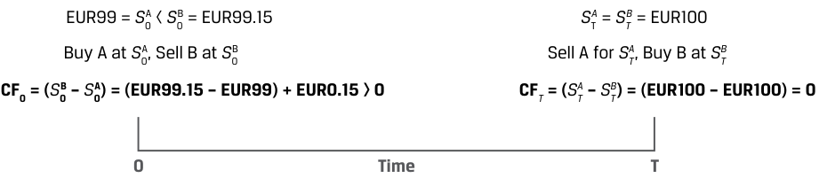
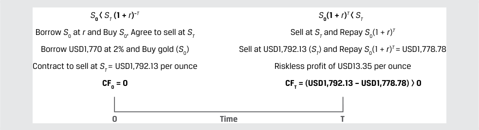
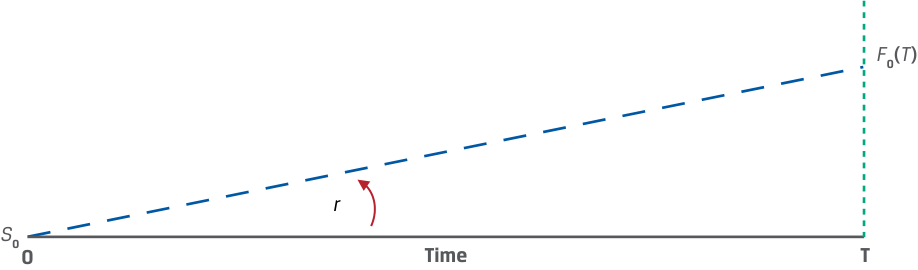
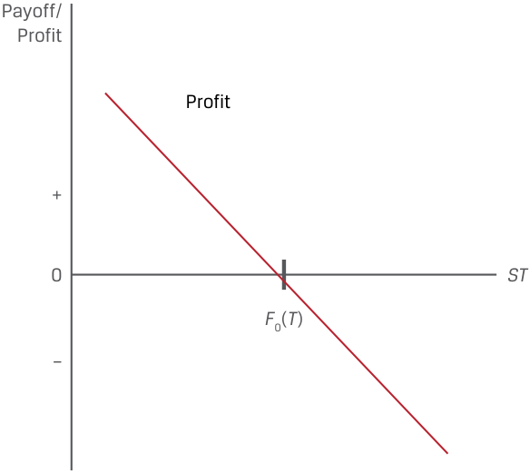
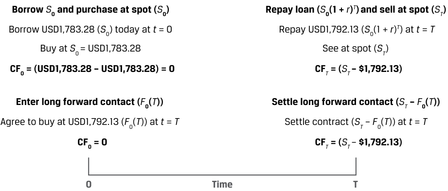
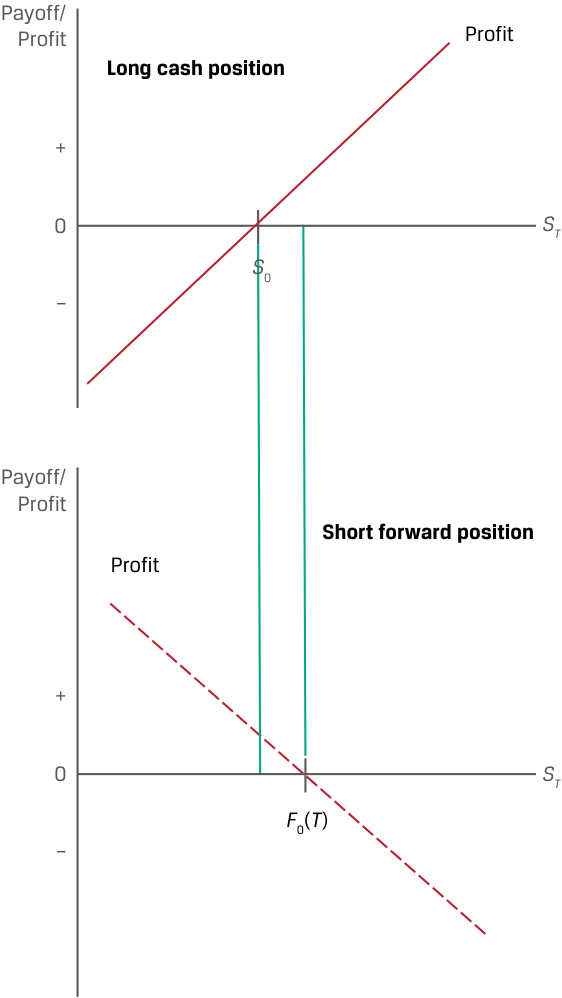
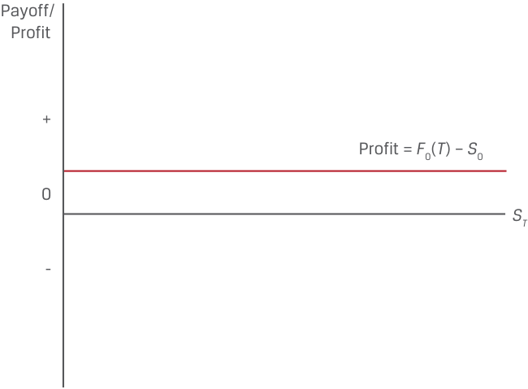

[Toàn Chương] LM04 — Learning Module 4 Arbitrage, Replication, and the Cost of Carry in Pricing Derivatives
Volume 7: Derivatives
Learning Module 4 Arbitrage, Replication, and the Cost of Carry in Pricing Derivatives
Part 1/2: Introduction (PDF Pages 85–95)
Tập 7: Công cụ Phái sinh (Derivatives)
Học phần 4: Kinh doanh Chênh lệch giá, Mô phỏng và Chi phí Lưu giữ trong Định giá Công cụ Phái sinh (Arbitrage, Replication, and the Cost of Carry in Pricing Derivatives)
Phần 1/2: Giới thiệu (Introduction) (Trang PDF 85–95)
L E A R N I N G M O D U L E
H Ọ C P H Ầ N
4
4
Arbitrage, Replication, and the Cost of Carry in Pricing Derivatives
Kinh doanh Chênh lệch giá, Mô phỏng và Chi phí Lưu giữ trong Định giá Công cụ Phái sinh (Arbitrage, Replication, and the Cost of Carry in Pricing Derivatives)
LEARNING OUTCOMES
MỤC TIÊU HỌC TẬP (LEARNING OUTCOMES)
| Mastery The candidate should be able to: |
|---|
| _Mức độ Thành thạo (Mastery)_ Ứng viên cần có khả năng: |
|---|
| Giải thích cách thức các khái niệm kinh doanh chênh lệch giá (arbitrage) và mô phỏng (replication) được sử dụng trong định giá các công cụ phái sinh (pricing derivatives). |
| Giải thích sự khác biệt giữa giá giao ngay (spot price) và giá kỳ vọng trong tương lai (expected future price) của một tài sản cơ sở cùng với chi phí lưu giữ (cost of carry) gắn liền với việc nắm giữ tài sản cơ sở đó. |
explain how the concepts of arbitrage and replication are used in pricing derivatives explain the difference between the spot and expected future price of an underlying and the cost of carry associated with holding the underlying asset
INTRODUCTION
GIỚI THIỆU (INTRODUCTION)
1
1
Earlier derivative lessons established the features of derivative instruments and markets and addressed both the benefits and risks associated with their use. Forward commitments and contingent claims were distinguished by their different payoff profiles and other characteristics. We now turn our attention to the pricing and valuation of these instruments. As a first step, we explore how the price of a forward commitment is related to the spot price of an underlying asset in a way that does not allow for arbitrage opportunities. Specifically, the strategy of replication shows that identical payoffs to a forward commitment can be achieved from spot market transactions combined with borrowing or lending at the risk-free rate. Finally, the second lesson demonstrates how costs or benefits associated with owning an underlying asset affect the forward commitment price.
Các bài học về công cụ phái sinh trước đó đã thiết lập những đặc điểm của các công cụ và thị trường phái sinh, đồng thời đề cập đến cả những lợi ích lẫn rủi ro gắn liền với việc sử dụng chúng. Cam kết kỳ hạn (forward commitments) và quyền yêu cầu dự phòng (contingent claims) được phân biệt bởi cấu trúc lợi nhuận khi đáo hạn (payoff profiles) và các đặc điểm khác nhau của chúng. Giờ đây, chúng ta chuyển sự chú ý sang việc định giá (pricing) và xác định giá trị (valuation) của các công cụ này. Như một bước đầu tiên, chúng ta khám phá cách thức mức giá của một cam kết kỳ hạn liên hệ với giá giao ngay của một tài sản cơ sở theo cách không cho phép tồn tại các cơ hội kinh doanh chênh lệch giá (arbitrage opportunities). Cụ thể, chiến lược mô phỏng (replication) cho thấy rằng các khoản thanh toán (payoffs) hoàn toàn giống hệt với một cam kết kỳ hạn có thể đạt được từ các giao dịch trên thị trường giao ngay kết hợp với việc đi vay hoặc cho vay ở mức lãi suất phi rủi ro (risk-free rate). Cuối cùng, bài học thứ hai minh họa cách thức các chi phí hoặc lợi ích gắn liền với việc sở hữu một tài sản cơ sở tác động đến mức giá của cam kết kỳ hạn.
LEARNING MODULE OVERVIEW
TỔNG QUAN HỌC PHẦN (LEARNING MODULE OVERVIEW)
- Forward commitments are an alternative means of taking a long or short position in an underlying asset. A link between forward prices and spot prices exists to prevent investors from taking advantage of arbitrage opportunities across cash and derivative instruments.
- Cam kết kỳ hạn (forward commitments) là một phương thức thay thế để thiết lập vị thế mua (long position) hoặc vị thế bán (short position) đối với một tài sản cơ sở. Mối liên kết giữa giá kỳ hạn (forward prices) và giá giao ngay (spot prices) tồn tại nhằm ngăn chặn các nhà đầu tư tận dụng những cơ hội kinh doanh chênh lệch giá (arbitrage opportunities) giữa các công cụ trên thị trường tiền mặt (cash instruments) và công cụ phái sinh (derivative instruments).
CFA Institute would like to thank Don Chance, PhD, CFA, for his contribution to this section, which includes material derived from material that appeared in Derivative Markets and Instruments , featured in the 2022 CFA® Program curriculum.
Viện CFA (CFA Institute) xin gửi lời cảm ơn tới Tiến sĩ Don Chance, CFA, vì những đóng góp của ông cho phần này, trong đó bao gồm nội dung được trích xuất từ tài liệu xuất hiện trong phần Thị trường và Công cụ Phái sinh (Derivative Markets and Instruments), nằm trong chương trình giảng dạy CFA® Program năm 2022.
-
A forward commitment may be replicated with a long or short spot position in the underlying asset and borrowing or lending at a risk-free rate. Investors can recreate a variety of positions by using appropriate combinations of spot, forward, and risk-free positions.
-
The risk-free rate provides a fundamental link between spot and forward prices for underlying assets with no additional costs or benefits of ownership.
-
The cost of carry is the net of the costs and benefits related to owning an underlying asset for a specific period and must be factored into the difference between the spot price and a forward price of a specific underlying asset.
-
The cost of carry may include costs, such as storage and insurance for physical commodities, or benefits of ownership, such as dividends for stocks and interest for bonds. Foreign exchange represents a special case in which the cost of carry is the interest rate differential between two currencies.
-
Forward prices may be greater than or less than the underlying spot price, depending on the specific cost of carry associated with owning the underlying asset.
-
Một cam kết kỳ hạn có thể được mô phỏng (replicated) bằng một vị thế giao ngay mua hoặc bán đối với tài sản cơ sở kết hợp với việc đi vay hoặc cho vay ở mức lãi suất phi rủi ro. Các nhà đầu tư có thể tái tạo nhiều vị thế khác nhau bằng cách sử dụng các sự kết hợp phù hợp giữa vị thế giao ngay (spot), vị thế kỳ hạn (forward) và vị thế phi rủi ro (risk-free positions).
-
Lãi suất phi rủi ro (risk-free rate) cung cấp mối liên kết nền tảng giữa giá giao ngay và giá kỳ hạn đối với các tài sản cơ sở không phát sinh thêm chi phí hay lợi ích nào từ quyền sở hữu.
-
Chi phí lưu giữ (cost of carry) là giá trị ròng của các chi phí và lợi ích liên quan đến việc sở hữu một tài sản cơ sở trong một khoảng thời gian cụ thể và phải được tính đến trong khoản chênh lệch giữa giá giao ngay và giá kỳ hạn của một tài sản cơ sở cụ thể.
-
Chi phí lưu giữ có thể bao gồm các khoản chi phí, chẳng hạn như chi phí lưu kho (storage) và bảo hiểm (insurance) đối với hàng hóa vật chất (physical commodities), hoặc các lợi ích của quyền sở hữu, chẳng hạn như cổ tức (dividends) đối với cổ phiếu và tiền lãi (interest) đối với trái phiếu. Ngoại hối (foreign exchange) đại diện cho một trường hợp đặc biệt trong đó chi phí lưu giữ là mức chênh lệch lãi suất (interest rate differential) giữa hai đồng tiền.
-
Giá kỳ hạn có thể lớn hơn hoặc nhỏ hơn giá giao ngay của tài sản cơ sở, tùy thuộc vào chi phí lưu giữ cụ thể gắn liền với việc sở hữu tài sản cơ sở đó.
LEARNING MODULE SELF-ASSESSMENT
TỰ ĐÁNH GIÁ HỌC PHẦN (LEARNING MODULE SELF-ASSESSMENT)
These initial questions are intended to help you gauge your current level of understanding of this learning module.
Các câu hỏi ban đầu này nhằm mục đích giúp bạn tự đánh giá mức độ hiểu biết hiện tại của mình về học phần này.
- Which of the following statements correctly describes how to replicate a long forward position?
-
A. Sell a risk-free bond, and buy a cash market position in the underlying.
-
B. Buy a risk-free bond, and buy a cash market position in the underlying.
-
C. Buy a risk-free bond, and sell a cash market position in the underlying.
-
Solution:
- Phát biểu nào sau đây mô tả đúng cách thức mô phỏng một vị thế mua kỳ hạn (long forward position)?
-
A. Bán một trái phiếu phi rủi ro, và mua một vị thế trên thị trường tiền mặt đối với tài sản cơ sở.
-
B. Mua một trái phiếu phi rủi ro, và mua một vị thế trên thị trường tiền mặt đối với tài sản cơ sở.
-
C. Mua một trái phiếu phi rủi ro, và bán một vị thế trên thị trường tiền mặt đối với tài sản cơ sở.
-
Lời giải:
A is correct. Selling a risk-free bond provides the necessary cash to buy the underlying in the cash market. At the bond’s maturity, the underlying is sold at the future spot price, and the proceeds are used to pay off the bond. The profit on this transaction is dependent on the future spot price of the underlying compared to the underlying cash market price multiplied by one plus the risk-free rate, and this profit position is identical to that of a long forward position in the underlying. B is incorrect because buying the riskfree bond creates a need for cash in addition to buying the underlying in the cash market. C is incorrect because this combination would replicate a short forward position.
- Which of the following is closest to the arbitrage profit available to an investor who is able to buy an asset for a spot price of GBP50 at t = 0 and simultaneously sell a six-month forward commitment on the same asset at a forward price of GBP52.50? The risk-free rate of interest is 4%, and the asset has no additional costs or benefits.
- A. GBP0.99
A là đáp án đúng. Việc bán một trái phiếu phi rủi ro (selling a risk-free bond — tức là đi vay phi rủi ro) cung cấp lượng tiền mặt cần thiết để mua tài sản cơ sở trên thị trường tiền mặt (cash market). Khi trái phiếu đáo hạn, tài sản cơ sở được bán đi tại mức giá giao ngay trong tương lai, và số tiền thu được sẽ dùng để thanh toán dứt điểm trái phiếu đó. Lợi nhuận từ giao dịch này phụ thuộc vào mức giá giao ngay trong tương lai của tài sản cơ sở so với mức giá trên thị trường tiền mặt của tài sản cơ sở nhân với một cộng lãi suất phi rủi ro, và vị thế lợi nhuận này hoàn toàn giống hệt với vị thế mua kỳ hạn (long forward position) đối với tài sản cơ sở. B không đúng vì việc mua trái phiếu phi rủi ro làm phát sinh nhu cầu cần thêm tiền mặt bên cạnh việc mua tài sản cơ sở trên thị trường tiền mặt. C không đúng vì sự kết hợp này sẽ mô phỏng một vị thế bán kỳ hạn (short forward position).
B. GBP0.48
- Giá trị nào sau đây gần nhất với mức lợi nhuận kinh doanh chênh lệch giá (arbitrage profit) dành cho một nhà đầu tư có khả năng mua một tài sản với giá giao ngay là $\text{GBP}50$ tại thời điểm $t = 0$ và đồng thời bán một cam kết kỳ hạn sáu tháng trên cùng tài sản đó với mức giá kỳ hạn là $\text{GBP}52.50$? Lãi suất phi rủi ro là $4\%$, và tài sản này không có thêm chi phí hay lợi ích nào khác.
-
A. $\text{GBP}0.99$
-
B. $\text{GBP}0.48$
-
C. GBP1.51
-
Solution: C is correct. The investor borrows at 4% for six months to buy the asset today for GBP50. After six months, the investor pays the lender S 0(1 + r )T , or GBP50.99 [= GBP50(1.04)0.5 ] in principal and interest and delivers the asset to satisfy the forward commitment to sell at GBP52.50. The investor’s arbitrage profit is GBP1.51 (= GBP52.50 – GBP50.99). A is incorrect because this answer reflects the difference between the no-arbitrage forward price and the current spot price. B is incorrect because this answer reflects the difference between the forward price discounted back one year (rather than six months) and the current spot price.
-
- Which of the following statements correctly describes the relationship between a forward commitment price compared to the underlying spot price when the benefits of owning the underlying are greater than the costs of owning the underlying (including the opportunity interest costs)? A. Forward commitment price > spot price. B. Forward commitment price < spot price. C. Forward commitment price = spot price.
-
Solution: B is correct. Greater benefits associated with the underlying will be associated with a higher spot price relative to the forward commitment price, and if these benefits are greater than the costs of owning the underlying, then the spot price will be greater than the forward commitment price. A is incorrect because this inequality would be true in the case of the costs exceeding the benefits. C is incorrect because an equality between the two prices describes the rare circumstance in which costs and benefits are exactly equal.
-
- Which of the following statements best defines a convenience yield? A. Convenience yield reflects the preference that market participants exhibit for buying forward contracts to avoid having to pay cash up front.
-
B. Convenience yield reflects the preference that market participants exhibit for buying in the spot market to avoid having to pay for storage.
-
C. Convenience yield reflects the preference that market participants exhibit for buying in the spot market for non-cash reasons, including low inventories in the underlying cash market.
-
C. $\text{GBP}1.51$
-
Lời giải: C là đáp án đúng. Nhà đầu tư đi vay với lãi suất $4\%$ trong sáu tháng để mua tài sản ngày hôm nay với giá $\text{GBP}50$. Sau sáu tháng, nhà đầu tư trả cho bên cho vay khoản tiền gốc và lãi là $S_0(1 + r)^T$, tương đương $\text{GBP}50.99$ [$= \text{GBP}50(1.04)^{0.5}$], đồng thời chuyển giao tài sản để thực hiện cam kết kỳ hạn bán ở mức giá $\text{GBP}52.50$. Lợi nhuận kinh doanh chênh lệch giá của nhà đầu tư là $\text{GBP}1.51$ ($= \text{GBP}52.50 - \text{GBP}50.99$). A không đúng vì đáp án này phản ánh phần chênh lệch giữa mức giá kỳ hạn không có kinh doanh chênh lệch giá (no-arbitrage forward price) và giá giao ngay hiện tại. B không đúng vì đáp án này phản ánh phần chênh lệch giữa giá kỳ hạn được chiết khấu ngược về một năm (thay vì sáu tháng) và giá giao ngay hiện tại.
- Phát biểu nào sau đây mô tả đúng mối quan hệ giữa giá của một cam kết kỳ hạn so với giá giao ngay của tài sản cơ sở khi lợi ích của việc sở hữu tài sản cơ sở lớn hơn chi phí của việc sở hữu tài sản cơ sở đó (bao gồm cả chi phí lãi vay cơ hội)? - A. Giá cam kết kỳ hạn $>$ giá giao ngay. - B. Giá cam kết kỳ hạn $<$ giá giao ngay. - C. Giá cam kết kỳ hạn $=$ giá giao ngay.
- Lời giải: B là đáp án đúng. Lợi ích lớn hơn gắn liền với tài sản cơ sở sẽ dẫn đến mức giá giao ngay cao hơn tương đối so với giá cam kết kỳ hạn, và nếu những lợi ích này lớn hơn các chi phí của việc sở hữu tài sản cơ sở, thì giá giao ngay sẽ lớn hơn giá cam kết kỳ hạn. A không đúng vì bất đẳng thức này sẽ đúng trong trường hợp chi phí vượt quá lợi ích. C không đúng vì sự ngang bằng giữa hai mức giá mô tả trường hợp hiếm gặp khi chi phí và lợi ích bằng nhau một cách chính xác.
- Phát biểu nào sau đây định nghĩa đúng nhất về lợi suất tiện ích (convenience yield)? - A. Lợi suất tiện ích phản ánh sự ưu tiên mà những người tham gia thị trường thể hiện đối với việc mua các hợp đồng kỳ hạn nhằm tránh phải trả tiền mặt ngay từ đầu.
-
B. Lợi suất tiện ích phản ánh sự ưu tiên mà những người tham gia thị trường thể hiện đối với việc mua trên thị trường giao ngay nhằm tránh phải trả chi phí lưu kho.
-
C. Lợi suất tiện ích phản ánh sự ưu tiên mà những người tham gia thị trường thể hiện đối với việc mua trên thị trường giao ngay vì các lý do phi tiền mặt, bao gồm cả tình trạng hàng tồn kho thấp trên thị trường tiền mặt của tài sản cơ sở.
Solution:
Lời giải:
C is correct. The convenience yield is a non-cash benefit associated with owning an underlying physical commodity that arises under certain economic conditions, including low inventories of the underlying. A is incorrect because the statement suggests convenience yield is a cost of owning the underlying. B is incorrect because the statement is contradictory in that it states that convenience yield causes market participants to prefer spot markets but incorrectly attributes this to a cost of owning the underlying.
C là đáp án đúng. Lợi suất tiện ích (convenience yield) là một lợi ích phi tiền mặt (non-cash benefit) gắn liền với việc sở hữu một hàng hóa vật chất cơ sở, phát sinh trong những điều kiện kinh tế nhất định, bao gồm cả tình trạng hàng tồn kho của tài sản cơ sở ở mức thấp. A không đúng vì phát biểu này ngụ ý rằng lợi suất tiện ích là một khoản chi phí của việc sở hữu tài sản cơ sở. B không đúng vì phát biểu này tự mâu thuẫn ở chỗ nó nêu rằng lợi suất tiện ích khiến những người tham gia thị trường ưu tiên thị trường giao ngay nhưng lại quy điều này một cách sai lầm cho một khoản chi phí của việc sở hữu tài sản cơ sở (mua trên thị trường giao ngay thực tế làm phát sinh chi phí lưu kho chứ không phải tránh được nó).
2
2
ARBITRAGE
KINH DOANH CHÊNH LỆCH GIÁ (ARBITRAGE)
explain how the concepts of arbitrage and replication are used in pricing derivatives
Giải thích cách thức các khái niệm kinh doanh chênh lệch giá (arbitrage) và mô phỏng (replication) được sử dụng trong định giá các công cụ phái sinh.
An earlier lesson on market efficiency established that market prices should not allow for the possibility of riskless profit or arbitrage in the absence of transaction costs. In its simplest form, an arbitrage opportunity arises if the “law of one price” does not hold, or an identical asset trades at the same time at different prices in different places.
Một bài học trước đây về tính hiệu quả của thị trường (market efficiency) đã xác lập rằng giá cả thị trường không nên cho phép tồn tại khả năng thu lợi nhuận phi rủi ro (riskless profit) hay kinh doanh chênh lệch giá (arbitrage) khi không có chi phí giao dịch. Ở dạng đơn giản nhất, một cơ hội kinh doanh chênh lệch giá phát sinh nếu “quy luật một giá” (law of one price) không được đảm bảo, hoặc một tài sản giống hệt nhau được giao dịch cùng một lúc ở các mức giá khác nhau tại các địa điểm khác nhau.
In the case of a derivative contract whose value is derived from future cash flows associated with the price of an underlying asset, arbitrage opportunities arise either if two assets with identical future cash flows trade at different prices or if an asset with a known future price does not trade at the present value of its future price determined using an appropriate discount rate.
Trong trường hợp của một hợp đồng phái sinh mà giá trị của nó bắt nguồn từ các dòng tiền trong tương lai gắn liền với giá của một tài sản cơ sở, cơ hội kinh doanh chênh lệch giá sẽ phát sinh hoặc khi hai tài sản có dòng tiền tương lai giống hệt nhau được giao dịch ở các mức giá khác nhau, hoặc khi một tài sản có mức giá tương lai đã biết không được giao dịch tại mức giá trị hiện tại (present value) của giá tương lai đó khi được xác định bằng một lãi suất chiết khấu phù hợp.
The first case of assets with identical future cash flows trading at different prices is illustrated in Exhibit 1.
Trường hợp đầu tiên về các tài sản có dòng tiền tương lai giống hệt nhau nhưng giao dịch ở các mức giá khác nhau được minh họa trong Bảng minh họa 1 (Exhibit 1).
Exhibit 1: Assets with Identical Future Cash Flows Trade at Different Prices
Bảng minh họa 1: Các Tài sản có Dòng tiền Tương lai Giống hệt nhau Giao dịch ở các Mức giá Khác nhau (Assets with Identical Future Cash Flows Trade at Different Prices)

Chú thích hình ảnh: - Tại thời điểm $0$: $\text{EUR}99 = S_0^A < S_0^B = \text{EUR}99.15$ $\rightarrow$ Mua A tại mức giá $S_0^A$, Bán B tại mức giá $S_0^B$ $\rightarrow$ Dòng tiền tại thời điểm $0$: $CF_0 = (S_0^B - S_0^A) = (\text{EUR}99.15 - \text{EUR}99) = +\text{EUR}0.15 > 0$. - Tại thời điểm $T$: $S_T^A = S_T^B = \text{EUR}100$ $\rightarrow$ Bán A với giá $S_T^A$, Mua B tại giá $S_T^B$ $\rightarrow$ Dòng tiền tại thời điểm $T$: $CF_T = (S_T^A - S_T^B) = (\text{EUR}100 - \text{EUR}100) = 0$.
For example, assume the two assets are zero-coupon bonds with identical features and the same issuer. Both bonds mature on the same future date with a payoff of par and have the same risk of default between now and the maturity date.
Ví dụ, giả sử hai tài sản này là các trái phiếu không trả lãi định kỳ (zero-coupon bonds) có các đặc điểm giống hệt nhau và cùng một tổ chức phát hành. Cả hai trái phiếu đều đáo hạn vào cùng một ngày trong tương lai với khoản thanh toán bằng mệnh giá (par) và có cùng mức rủi ro vỡ nợ từ nay cho đến ngày đáo hạn.
1. Bond A has a price of EUR99 at time t = 0 ( S 0A = EUR99).
1. Trái phiếu A có giá là $\text{EUR}99$ tại thời điểm $t = 0$ ($S_0^A = \text{EUR}99$).
2. Bond B has a price of EUR99.15 at time t = 0 ( S 0B = EUR99.15).
2. Trái phiếu B có giá là $\text{EUR}99.15$ tại thời điểm $t = 0$ ($S_0^B = \text{EUR}99.15$).
3. Both bonds have an expected future price of EUR100 ( STA = STB = EUR100). This scenario represents an arbitrage opportunity for an investor.
3. Cả hai trái phiếu đều có mức giá kỳ vọng trong tương lai là $\text{EUR}100$ ($S_T^A = S_T^B = \text{EUR}100$). Kịch bản này đại diện cho một cơ hội kinh doanh chênh lệch giá đối với nhà đầu tư.
-
At time t = 0, the investor can:
-
Sell Bond B short to receive proceeds of EUR99.15 and purchase Bond A for EUR99;
-
Realize a net cash inflow at t = 0 of EUR0.15.
-
At time t = T , when both bonds mature, the investor:
-
Receives EUR100 for Bond A and uses this to buy Bond B for EUR100 to cover the short position.
-
The offsetting cash flows at time T leave the investor with a riskless profit of the EUR0.15 price difference between Bonds A and B at time 0.
-
Tại thời điểm $t = 0$, nhà đầu tư có thể:
-
Bán khống (sell short) Trái phiếu B để nhận số tiền thu về là $\text{EUR}99.15$ và mua Trái phiếu A với giá $\text{EUR}99$;
-
Hiện thực hóa một dòng tiền vào ròng (net cash inflow) tại thời điểm $t = 0$ là $\text{EUR}0.15$.
-
Tại thời điểm $t = T$, khi cả hai trái phiếu đáo hạn, nhà đầu tư:
-
Nhận được $\text{EUR}100$ từ Trái phiếu A và sử dụng số tiền này để mua Trái phiếu B với giá $\text{EUR}100$ nhằm đóng vị thế bán khống (cover the short position).
-
Các dòng tiền bù trừ cho nhau tại thời điểm $T$ giúp nhà đầu tư thu được một khoản lợi nhuận phi rủi ro bằng đúng khoản chênh lệch giá $\text{EUR}0.15$ giữa Trái phiếu A và B tại thời điểm $0$.
Other investors taking note of this discrepancy will also seek to earn a riskless profit at time t = 0 by selling Bond B, driving its price down, and buying Bond A, driving its price up, until the prices converge. The arbitrage opportunity disappears once the bonds have the same price ( S 0A = S 0B ).
Những nhà đầu tư khác khi nhận thấy sự bất hợp lý này cũng sẽ tìm cách kiếm lợi nhuận phi rủi ro tại thời điểm $t = 0$ bằng cách bán Trái phiếu B, đẩy giá của nó giảm xuống, và mua Trái phiếu A, đẩy giá của nó tăng lên, cho đến khi hai mức giá hội tụ. Cơ hội kinh doanh chênh lệch giá sẽ biến mất một khi hai trái phiếu có cùng mức giá ($S_0^A = S_0^B$).
A second type of derivative-related arbitrage opportunity arises when an asset with a known future price does not trade at the present value (PV) of its future price. An earlier time-value-of-money lesson distinguished between discrete and continuous compounding in calculating present versus future value. The future value of a single cash flow based on a discrete number of uniform periods follows the general formula in Equation 1:
Loại cơ hội kinh doanh chênh lệch giá thứ hai liên quan đến công cụ phái sinh phát sinh khi một tài sản có mức giá tương lai đã biết không được giao dịch ở mức giá trị hiện tại ($\text{PV}$) của giá tương lai đó. Một bài học trước đây về giá trị thời gian của tiền tệ đã phân biệt giữa ghép lãi rời rạc (discrete compounding) và ghép lãi liên tục (continuous compounding) khi tính toán giá trị hiện tại so với giá trị tương lai. Giá trị tương lai của một dòng tiền đơn lẻ dựa trên một số lượng rời rạc các kỳ đồng nhất tuân theo công thức tổng quát trong Phương trình 1:
FV N = PV(1 + r )N , ~~(1)~~
where r is the stated interest rate per period and N is the number of compounding periods. C ontinuous compounding is the case in which the length of the uniform periods approaches zero, so the number of periods per year approaches infinity and is calculated using the natural logarithm, as shown in Equation 2:
trong đó $r$ là lãi suất công bố trên mỗi kỳ và $N$ là số kỳ ghép lãi. Ghép lãi liên tục (continuous compounding) là trường hợp trong đó độ dài của các kỳ đồng nhất tiến dần về $0$, do đó số kỳ trong một năm tiến tới vô cùng và được tính toán bằng cách sử dụng cơ số logarit tự nhiên, như được thể hiện trong Phương trình 2:
FV T = PV erT . ~~(2)~~
While derivatives may be priced with either approach, for purposes of this and later lessons, we will use the discrete compounding method for individual underlying assets. However, for underlying assets that represent a portfolio, such as an equity, fixed-income, commodity, or credit index, or where the underlying involves foreign exchange where interest rates are denominated in two currencies, continuous compounding will be the preferred method. Ignoring additional costs or benefits associated with asset ownership, the appropriate discount rate, r , is the risk-free rate, as demonstrated in Example 1.
Mặc dù các công cụ phái sinh có thể được định giá bằng một trong hai phương pháp, nhưng phục vụ cho mục đích của bài học này và các bài học sau, chúng ta sẽ sử dụng phương pháp ghép lãi rời rạc cho từng tài sản cơ sở riêng lẻ. Tuy nhiên, đối với các tài sản cơ sở đại diện cho một danh mục đầu tư, chẳng hạn như chỉ số cổ phiếu, thu nhập cố định, hàng hóa hoặc tín dụng, hoặc khi tài sản cơ sở liên quan đến ngoại hối nơi lãi suất được định danh bằng hai đồng tiền khác nhau, ghép lãi liên tục sẽ là phương pháp được ưu tiên sử dụng. Nếu bỏ qua các chi phí hoặc lợi ích bổ sung gắn liền với quyền sở hữu tài sản, mức lãi suất chiết khấu phù hợp, $r$, chính là lãi suất phi rủi ro, như được minh họa trong Ví dụ 1.
EXAMPLE 1
VÍ DỤ 1 (EXAMPLE 1)
Spot vs. Discounted Known Future Price of Gold
Giá Vàng Giao ngay so với Giá Tương lai Đã biết Được Chiết khấu (Spot vs. Discounted Known Future Price of Gold)
In an earlier lesson, Procam Investments entered into a contract to buy 100 ounces of gold at an agreed-upon price of USD1,792.13 per ounce in three months. In this example, Procam does the opposite trade, given a discrepancy between spot and discounted known future gold prices. Assume that today’s spot gold price ( S 0) is USD1,770 per ounce, and the annualized risk-free interest rate ( r ) is 2%. For purposes of this example, we assume that Procam can borrow at the risk-free rate and gold may be stored at no cost. Under these conditions, we demonstrate how Procam can generate a riskless profit:
Trong một bài học trước, Procam Investments đã tham gia vào một hợp đồng mua $100\text{ ounce}$ vàng tại mức giá thỏa thuận trước là $\text{USD}1,792.13$ mỗi ounce sau ba tháng. Trong ví dụ này, Procam thực hiện giao dịch ngược lại, khi nhận thấy có sự chênh lệch giữa giá vàng giao ngay và giá vàng tương lai đã biết sau khi chiết khấu. Giả sử giá vàng giao ngay ngày hôm nay ($S_0$) là $\text{USD}1,770$ mỗi ounce, và lãi suất phi rủi ro chuẩn hóa theo năm ($r$) là $2\%$. Phục vụ cho mục đích của ví dụ này, chúng ta giả định rằng Procam có thể đi vay ở mức lãi suất phi rủi ro và vàng có thể được lưu kho mà không tốn chi phí. Dưới các điều kiện này, chúng ta minh họa cách thức Procam có thể tạo ra một khoản lợi nhuận phi rủi ro:
-
At time t = 0:
-
Procam borrows USD177,000 at 2.0% interest for three months and purchases 100 ounces of gold at today’s spot price.
-
Procam enters into a forward contract today to sell 100 ounces of gold at a price of USD1,792.13 per ounce in three months.
-
Tại thời điểm $t = 0$:
-
Procam vay $\text{USD}177,000$ với lãi suất $2.0\%$ trong ba tháng và mua $100\text{ ounce}$ vàng tại mức giá giao ngay ngày hôm nay.
-
Procam tham gia vào một hợp đồng kỳ hạn ngày hôm nay để bán $100\text{ ounce}$ vàng tại mức giá $\text{USD}1,792.13$ mỗi ounce sau ba tháng.

Chú thích hình ảnh: - Tại thời điểm $0$ ($S_0 < S_T(1 + r)^{-T}$): Vay $S_0$ tại lãi suất $r$ và Mua $S_0$, đồng thời Thỏa thuận bán tại giá $S_T$. Cụ thể: Vay $\text{USD}1,770$ tại mức lãi suất $2\%$ và Mua vàng ($S_0$); Ký hợp đồng bán tại $S_T = \text{USD}1,792.13$ mỗi ounce. Dòng tiền $CF_0 = 0$. - Tại thời điểm $T$ ($S_0(1 + r)^T < S_T$): Bán tại giá $S_T$ và Hoàn trả khoản vay $S_0(1 + r)^T$. Cụ thể: Bán ở mức giá $\text{USD}1,792.13$ ($S_T$) và Hoàn trả $S_0(1 + r)^T = \text{USD}1,778.78$; Thu lợi nhuận phi rủi ro là $\text{USD}13.35$ mỗi ounce. Dòng tiền $CF_T = (\text{USD}1,792.13 - \text{USD}1,778.78) > 0$.
■ At time t = T (in three months):
- Tại thời điểm $t = T$ (sau ba tháng):
-
Procam delivers 100 ounces of gold under the forward contract and receives USD179,213 (= 100 × USD1,792.13).
-
Procam repays the loan principal with interest:
-
Procam chuyển giao $100\text{ ounce}$ vàng theo hợp đồng kỳ hạn và nhận về $\text{USD}179,213$ ($= 100 \times \text{USD}1,792.13$).
-
Procam hoàn trả nợ gốc cùng với tiền lãi:
USD177,878.44 = USD177,000(1.02)0.25 .
- Procam’s riskless profit at time T is equal to the difference between the forward sale proceeds and the loan principal and interest: USD1,334.56 = USD179,213 – USD177,878.44.
- Lợi nhuận phi rủi ro của Procam tại thời điểm $T$ bằng phần chênh lệch giữa số tiền thu được từ việc bán kỳ hạn và khoản nợ gốc cộng lãi vay: $\text{USD}1,334.56 = \text{USD}179,213 - \text{USD}177,878.44$.
In Example 1, the spot price of gold, S 0, is below the present value of the known future price of gold in three months’ time ( S 0 < ST (1 + r )–T , since USD1,770 < USD1,783.28). Procam earns a riskless profit of USD13.35 per ounce by borrowing and purchasing gold in the cash market and simultaneously selling gold in the forward market at an agreed-upon price. We would expect that as other investors recognize and pursue this opportunity, the spot price will increase (and the forward price will fall) until the spot price is equal to the discounted value of the known future price ( S 0 = ST (1 + r )–T ) to eliminate this arbitrage opportunity.
Trong Ví dụ 1, giá vàng giao ngay, $S_0$, thấp hơn giá trị hiện tại của mức giá vàng tương lai đã biết sau thời gian ba tháng ($S_0 < S_T(1 + r)^{-T}$, vì $\text{USD}1,770 < \text{USD}1,783.28$). Procam kiếm được một khoản lợi nhuận phi rủi ro là $\text{USD}13.35$ mỗi ounce bằng cách đi vay và mua vàng trên thị trường tiền mặt, đồng thời bán vàng trên thị trường kỳ hạn tại mức giá đã thỏa thuận trước. Chúng ta kỳ vọng rằng khi các nhà đầu tư khác nhận ra và theo đuổi cơ hội này, giá giao ngay sẽ tăng lên (và giá kỳ hạn sẽ giảm xuống) cho đến khi giá giao ngay bằng với giá trị chiết khấu của mức giá tương lai đã biết ($S_0 = S_T(1 + r)^{-T}$) nhằm triệt tiêu cơ hội kinh doanh chênh lệch giá này.
The two key arbitrage concepts used to price derivatives for an underlying with no additional cash flows may be summarized as follows:
Hai khái niệm kinh doanh chênh lệch giá cốt lõi được sử dụng để định giá công cụ phái sinh đối với một tài sản cơ sở không có dòng tiền bổ sung có thể được tóm tắt như sau:
-
Identical assets or assets with identical cash flows traded at the same time must have the same price ( S 0A = S 0B ).
-
Assets with a known future price must have a spot price that equals the future price discounted at the risk-free rate ( S 0 = ST (1 + r )–T ).
-
Các tài sản giống hệt nhau hoặc các tài sản có dòng tiền giống hệt nhau được giao dịch tại cùng một thời điểm phải có cùng một mức giá ($S_0^A = S_0^B$).
-
Các tài sản có mức giá tương lai đã biết phải có giá giao ngay bằng với mức giá tương lai đó được chiết khấu theo lãi suất phi rủi ro ($S_0 = S_T(1 + r)^{-T}$).
These arbitrage conditions establish the relationship between spot prices, forward commitment prices, and the risk-free rate shown in Exhibit 2.
Các điều kiện kinh doanh chênh lệch giá này thiết lập mối quan hệ giữa giá giao ngay, giá cam kết kỳ hạn và lãi suất phi rủi ro như được thể hiện trong Bảng minh họa 2.
Exhibit 2: Spot Prices, Forward Commitment Prices, and the Risk-Free Rate
Bảng minh họa 2: Giá Giao ngay, Giá Cam kết Kỳ hạn và Lãi suất Phi rủi ro (Spot Prices, Forward Commitment Prices, and the Risk-Free Rate)

Chú thích hình ảnh: Đồ thị biểu diễn mối quan hệ tăng dần từ Giá giao ngay $S_0$ tại thời điểm $0$ lên Giá kỳ hạn $F_0(T)$ tại thời điểm $T$ với độ dốc phụ thuộc vào lãi suất phi rủi ro $r$.
Exhibit 2 shows the case of r > 0 for an asset with no additional income or costs under discrete compounding. Note that for a given time T , the forward price will be higher relative to the spot price with a higher risk-free rate r . Also, for a given risk-free rate r , as T increases, the forward price will increase relative to the spot price. It is important to note that the relevant risk-free rate for most market participants is the repo rate, introduced in an earlier lesson, where borrowed funds are collateralized by highly liquid securities.
Bảng minh họa 2 thể hiện trường hợp $r > 0$ đối với một tài sản không có thu nhập hay chi phí bổ sung theo phương pháp ghép lãi rời rạc. Lưu ý rằng đối với một thời điểm $T$ nhất định, giá kỳ hạn sẽ cao hơn tương đối so với giá giao ngay khi lãi suất phi rủi ro $r$ cao hơn. Ngoài ra, đối với một mức lãi suất phi rủi ro $r$ nhất định, khi $T$ tăng lên, giá kỳ hạn sẽ tăng lên tương đối so với giá giao ngay. Điều quan trọng cần lưu ý là mức lãi suất phi rủi ro phù hợp đối với hầu hết những người tham gia thị trường chính là lãi suất mua lại (repo rate), đã được giới thiệu trong một bài học trước, nơi các khoản vốn vay được thế chấp bằng những chứng khoán có tính thanh khoản cao.
Recall from an earlier lesson that a forward commitment has a symmetric payoff profile. That is, at time T , the transaction is settled on the basis of the difference between the forward price F 0( T ) and the underlying price of ST , or F 0( T ) – ST from the seller’s perspective, as in Exhibit 3.
Hãy nhớ lại từ bài học trước rằng một cam kết kỳ hạn có cấu trúc lợi nhuận đối xứng (symmetric payoff profile). Nghĩa là, tại thời điểm $T$, giao dịch được thanh toán dựa trên cơ sở phần chênh lệch giữa giá kỳ hạn $F_0(T)$ và giá tài sản cơ sở $S_T$, hay $F_0(T) - S_T$ xét dưới góc độ của bên bán, như trong Bảng minh họa 3.
Exhibit 3: Forward Commitment Seller Payoff Profile
Bảng minh họa 3: Cấu trúc Lợi nhuận của Bên Bán Cam kết Kỳ hạn (Forward Commitment Seller Payoff Profile)

Chú thích hình ảnh: Trục tung biểu diễn Khoản thanh toán/Lợi nhuận (Payoff/Profit) từ $-$ đến $+$; trục hoành biểu diễn Giá tài sản cơ sở tại ngày đáo hạn $S_T$. Đường lợi nhuận của bên bán kỳ hạn dốc xuống, cắt trục hoành tại $F_0(T)$ (khi $S_T < F_0(T)$ thì có lãi dương, khi $S_T > F_0(T)$ thì chịu lỗ âm).
The forward seller realizes a gain if the seller is able to deliver the underlying at a market value ( ST ) below the pre-agreed price, F 0( T ). In Example 1, Procam borrows to buy the underlying at a spot price below the present value of ST to lock in a riskless gain. So far, we have taken the forward price, F 0( T ), as given. In what follows, we demonstrate how no-arbitrage conditions may be used to establish the relationship between spot and forward prices by replicating or recreating an exact offsetting position for a forward commitment.
Bên bán kỳ hạn hiện thực hóa một khoản lãi nếu họ có khả năng chuyển giao tài sản cơ sở tại mức giá trị thị trường ($S_T$) thấp hơn mức giá đã thỏa thuận trước, $F_0(T)$. Trong Ví dụ 1, Procam đi vay để mua tài sản cơ sở tại mức giá giao ngay thấp hơn giá trị hiện tại của $S_T$ nhằm khóa chặt một khoản lãi phi rủi ro. Cho đến nay, chúng ta vẫn coi mức giá kỳ hạn, $F_0(T)$, là cho trước. Trong phần tiếp theo, chúng ta sẽ minh họa cách thức các điều kiện không có kinh doanh chênh lệch giá (no-arbitrage conditions) có thể được sử dụng để thiết lập mối quan hệ giữa giá giao ngay và giá kỳ hạn thông qua việc mô phỏng (replicating) hoặc tái tạo một vị thế bù trừ chính xác cho một cam kết kỳ hạn.
REPLICATION
MÔ PHỎNG (REPLICATION)
explain how the concepts of arbitrage and replication are used in pricing derivatives
3
Giải thích cách thức các khái niệm kinh doanh chênh lệch giá (arbitrage) và mô phỏng (replication) được sử dụng trong định giá các công cụ phái sinh.
Replication is a strategy in which a derivative’s cash flow stream may be recreated using a combination of long or short positions in an underlying asset and borrowing or lending cash. In contrast to the earlier arbitrage examples, replication is typically used to mirror or offset a derivative position when the law of one price holds and no riskless arbitrage profit opportunities exist. For example, Exhibit 4 compares a long forward commitment to the alternative of borrowing funds at the risk-free rate, r , to buy the underlying asset at today’s spot price, S 0.
Mô phỏng (Replication) là một chiến lược trong đó chuỗi dòng tiền của một công cụ phái sinh có thể được tái tạo bằng cách sử dụng sự kết hợp giữa các vị thế mua (long) hoặc bán (short) đối với một tài sản cơ sở cùng với việc đi vay hoặc cho vay tiền mặt. Trái ngược với các ví dụ kinh doanh chênh lệch giá trước đó, mô phỏng thường được sử dụng để phản chiếu (mirror) hoặc bù trừ (offset) một vị thế phái sinh khi quy luật một giá được đảm bảo và không tồn tại các cơ hội kiếm lợi nhuận kinh doanh chênh lệch giá phi rủi ro. Ví dụ, Bảng minh họa 4 so sánh một cam kết mua kỳ hạn (long forward commitment) với phương án thay thế là đi vay vốn ở mức lãi suất phi rủi ro, $r$, để mua tài sản cơ sở tại mức giá giao ngay ngày hôm nay, $S_0$.
Exhibit 4: Forward Commitment Replication
Bảng minh họa 4: Mô phỏng Cam kết Kỳ hạn (Forward Commitment Replication)

Chú thích hình ảnh: - Chiến lược Đi vay $S_0$ và mua giao ngay ($S_0$) $\rightarrow$ Hoàn trả khoản vay ($S_0(1+r)^T$) và bán giao ngay ($S_T$): - Tại $t = 0$: Vay $\text{USD}1,783.28$ ($S_0$) ngày hôm nay tại $t = 0$; Mua tại $S_0 = \text{USD}1,783.28$ $\rightarrow$ $CF_0 = (\text{USD}1,783.28 - \text{USD}1,783.28) = 0$. - Tại $t = T$: Hoàn trả $\text{USD}1,792.13$ ($S_0(1+r)^T$) tại $t = T$; Bán tại giá giao ngay ($S_T$) $\rightarrow$ $CF_T = (S_T - \text{\$1,792.13})$. - Chiến lược Tham gia hợp đồng mua kỳ hạn ($F_0(T)$) $\rightarrow$ Tất toán hợp đồng mua kỳ hạn ($S_T - F_0(T)$): - Tại $t = 0$: Thỏa thuận mua ở mức giá $\text{USD}1,792.13$ ($F_0(T)$) vào thời điểm $t = T$ $\rightarrow$ $CF_0 = 0$. - Tại $t = T$: Tất toán hợp đồng ($S_T - F_0(T)$) tại $t = T$ $\rightarrow$ $CF_T = (S_T - \text{\$1,792.13})$.
EXAMPLE 2
VÍ DỤ 2 (EXAMPLE 2)
Replication of a Forward Commitment
Mô phỏng một Cam kết Kỳ hạn (Replication of a Forward Commitment)
In Example 1, we reintroduced Procam Investments, which borrowed and purchased gold in the spot market and simultaneously sold gold in the forward market to earn a riskless profit. Here we change the assumption about today’s spot gold price ( S 0). Specifically, the spot gold price has risen to USD1,783.28 (= USD1,792.13(1.02)–0.25 ) to eliminate the earlier arbitrage opportunity when the spot price was USD1,770. Assume again that the risk-free interest rate ( r ) is 2% and gold can be stored at no cost.
Trong Ví dụ 1, chúng ta đã giới thiệu lại Procam Investments, công ty đã đi vay và mua vàng trên thị trường giao ngay đồng thời bán vàng trên thị trường kỳ hạn để kiếm một khoản lợi nhuận phi rủi ro. Ở đây, chúng ta thay đổi giả định về giá vàng giao ngay ngày hôm nay ($S_0$). Cụ thể, giá vàng giao ngay đã tăng lên mức $\text{USD}1,783.28$ ($= \text{USD}1,792.13(1.02)^{-0.25}$) để triệt tiêu cơ hội kinh doanh chênh lệch giá trước đó khi giá giao ngay ở mức $\text{USD}1,770$. Giả sử một lần nữa rằng lãi suất phi rủi ro ($r$) là $2\%$ và vàng có thể được lưu kho mà không tốn chi phí.
1. Long forward commitment (agree to buy at F 0( T ) at t = T )
1. Cam kết mua kỳ hạn (thỏa thuận mua tại giá $F_0(T)$ vào thời điểm $t = T$):
-
Procam enters a forward commitment to buy 100 ounces of gold in three months at a forward price, F 0( T ), of USD1,792.13 per ounce.
-
If ST = USD1,900 per ounce,
-
Profit = USD10,787 = 100 × (USD1,900 – USD1,792.13).
-
If ST = USD1,700 per ounce,
-
Profit = –USD9,213 = 100 × (USD1,700 –USD1,792.13).
-
Procam tham gia một cam kết kỳ hạn để mua $100\text{ ounce}$ vàng sau ba tháng tại mức giá kỳ hạn, $F_0(T)$, là $\text{USD}1,792.13$ mỗi ounce.
-
Nếu $S_T = \text{USD}1,900$ mỗi ounce:
- Lợi nhuận $= \text{USD}10,787 = 100 \times (\text{USD}1,900 - \text{USD}1,792.13)$.
-
Nếu $S_T = \text{USD}1,700$ mỗi ounce:
- Lợi nhuận $= -\text{USD}9,213 = 100 \times (\text{USD}1,700 - \text{USD}1,792.13)$.
2. Borrow and purchase (borrow S 0 and buy asset at S 0 at t = 0):
2. Đi vay và mua tài sản (vay $S_0$ và mua tài sản tại giá $S_0$ vào thời điểm $t = 0$):
-
Procam borrows USD178,328 at 2% and buys 100 ounces of gold at today’s spot price, S 0.
-
Procam sells the gold in three months at spot price ST .
-
Procam repays the loan principal and interest: USD179,213 = USD178,328(1.02)0.25 .
-
If ST = USD1,900,
-
Profit = USD10,787 = 100 × (USD1,900 – USD1,792.13).
-
If ST = USD1,700,
-
Profit = –USD9,213 = 100 × (USD1,700 – USD1,792.13).
-
Procam vay $\text{USD}178,328$ với lãi suất $2\%$ và mua $100\text{ ounce}$ vàng tại mức giá giao ngay ngày hôm nay, $S_0$.
-
Procam bán số vàng đó sau ba tháng tại mức giá giao ngay $S_T$.
-
Procam hoàn trả nợ gốc và lãi vay: $\text{USD}179,213 = \text{USD}178,328(1.02)^{0.25}$.
-
Nếu $S_T = \text{USD}1,900$:
- Lợi nhuận $= \text{USD}10,787 = 100 \times (\text{USD}1,900 - \text{USD}1,792.13)$.
-
Nếu $S_T = \text{USD}1,700$:
- Lợi nhuận $= -\text{USD}9,213 = 100 \times (\text{USD}1,700 - \text{USD}1,792.13)$.
Note that the same profits are observed under Scenarios 1 and 2, which are equal to ST – F 0( T ). If we set the forward price, F 0( T ), equal to the future value of the spot rate using the risk-free rate ( F 0( T ) = S 0(1 + r )T ), the no-arbitrage condition demonstrates that Procam generates the same cash flow at time T regardless of the direction of gold prices whether the company
Lưu ý rằng các mức lợi nhuận hoàn toàn giống nhau được quan sát thấy dưới cả Kịch bản 1 và Kịch bản 2, đều bằng $S_T - F_0(T)$. Nếu chúng ta đặt mức giá kỳ hạn, $F_0(T)$, bằng với giá trị tương lai của giá giao ngay tính theo lãi suất phi rủi ro ($F_0(T) = S_0(1 + r)^T$), điều kiện không có kinh doanh chênh lệch giá chứng minh rằng Procam tạo ra cùng một dòng tiền tại thời điểm $T$ bất kể chiều hướng biến động của giá vàng, cho dù công ty:
1. enters into a long forward commitment settled at time T or
1. tham gia vào một cam kết mua kỳ hạn được tất toán tại thời điểm $T$, hay
2. borrows at the risk-free rate, buys the underlying asset, and holds it until time T .
2. đi vay ở mức lãi suất phi rủi ro, mua tài sản cơ sở và nắm giữ nó cho đến thời điểm $T$.
A separate but related form of replication pairing a long asset with a short forward is shown in Exhibit 5. The top half shows the profit/loss profile of the long asset, and the bottom half shows that of the short forward position. The long asset position produces a profit (loss) when ST > S 0 ( ST < S 0). The short forward position produces a profit (loss) when ST < F 0 ( ST > F 0).
Một hình thức mô phỏng riêng biệt nhưng có liên quan, kết hợp một vị thế mua tài sản (long asset) với một vị thế bán kỳ hạn (short forward), được thể hiện trong Bảng minh họa 5. Nửa trên thể hiện cấu trúc lãi/lỗ của vị thế mua tài sản, và nửa dưới thể hiện cấu trúc lãi/lỗ của vị thế bán kỳ hạn. Vị thế mua tài sản tạo ra một khoản lãi (lỗ) khi $S_T > S_0$ ($S_T < S_0$). Vị thế bán kỳ hạn tạo ra một khoản lãi (lỗ) khi $S_T < F_0$ ($S_T > F_0$).
Exhibit 5: Payoffs for Long Asset and Short Forward Positions
Bảng minh họa 5: Khoản thanh toán cho Vị thế Mua Tài sản và Vị thế Bán Kỳ hạn (Payoffs for Long Asset and Short Forward Positions)

Chú thích hình ảnh: - Đồ thị trên (Vị thế mua trên thị trường tiền mặt - Long cash position): Đường lợi nhuận (Payoff/Profit) dốc lên, cắt trục hoành $S_T$ tại $S_0$. - Đồ thị dưới (Vị thế bán kỳ hạn - Short forward position): Đường lợi nhuận (Payoff/Profit) dốc xuống, cắt trục hoành $S_T$ tại $F_0(T)$.
In contrast to Example 2, these positions appear to offset one another. The following example evaluates the return generated by these combined positions.
Trái ngược với Ví dụ 2, các vị thế này dường như bù trừ lẫn nhau. Ví dụ sau đây đánh giá tỷ suất sinh lợi được tạo ra bởi sự kết hợp của các vị thế này.
EXAMPLE 3
VÍ DỤ 3 (EXAMPLE 3)
Risk-Free Trade Replication: Long Asset, Short Forward
Mô phỏng Giao dịch Phi Rủi ro: Mua Tài sản, Bán Kỳ hạn (Risk-Free Trade Replication: Long Asset, Short Forward)
Procam Investments buys 100 ounces of gold at today’s spot price ( S 0) of USD1,783.28 and simultaneously enters a forward commitment to sell gold at the forward price, F 0( T ), of USD1,792.13. Again, we assume that gold can be stored at no cost, and here we solve for Procam’s rate of return.
Procam Investments mua $100\text{ ounce}$ vàng tại mức giá giao ngay ngày hôm nay ($S_0$) là $\text{USD}1,783.28$ và đồng thời tham gia một cam kết kỳ hạn để bán vàng tại mức giá kỳ hạn, $F_0(T)$, là $\text{USD}1,792.13$. Một lần nữa, chúng ta giả định rằng vàng có thể được lưu kho mà không tốn chi phí, và ở đây chúng ta giải tìm tỷ suất sinh lợi của Procam.
-
At t = 0, Procam’s cash flow is – S 0 = –USD178,328.
-
At t = T , Procam’s cash flow is F 0( T ) = USD179,213.
-
Solve for the rate of return on Procam’s strategy, as follows:
-
USD179,213 = USD178,328(1 + r )0.25 .
-
r = 2.0%, which is equal to the risk-free rate.
-
Tại thời điểm $t = 0$, dòng tiền của Procam là $-S_0 = -\text{USD}178,328$.
-
Tại thời điểm $t = T$, dòng tiền của Procam là $F_0(T) = \text{USD}179,213$.
-
Giải tìm tỷ suất sinh lợi đối với chiến lược của Procam như sau:
-
$\text{USD}179,213 = \text{USD}178,328(1 + r)^{0.25}$.
-
$r = 2.0\%$, bằng đúng mức lãi suất phi rủi ro.
This example demonstrates that Procam can hedge its long gold cash position with a short derivative (i.e., selling the forward contract) and earn the risk-free rate of return as long as the no-arbitrage condition ( F 0( T ) = S 0(1 + r )T ) holds. The combined return is shown in Exhibit 6. Note that if Procam borrows at the risk-free rate to purchase the underlying asset at S 0, it will earn zero.
Ví dụ này chứng minh rằng Procam có thể phòng ngừa rủi ro (hedge) cho vị thế mua vàng trên thị trường tiền mặt của mình bằng một vị thế bán công cụ phái sinh (tức là bán hợp đồng kỳ hạn) và kiếm được tỷ suất sinh lợi phi rủi ro miễn là điều kiện không có kinh doanh chênh lệch giá ($F_0(T) = S_0(1 + r)^T$) được đảm bảo. Lợi nhuận kết hợp được thể hiện trong Bảng minh họa 6. Lưu ý rằng nếu Procam đi vay ở mức lãi suất phi rủi ro để mua tài sản cơ sở tại giá $S_0$, công ty sẽ kiếm được lợi nhuận bằng không.
Exhibit 6: Combined Long Asset and Short Forward Profit
Bảng minh họa 6: Lợi nhuận Kết hợp của Vị thế Mua Tài sản và Bán Kỳ hạn (Combined Long Asset and Short Forward Profit)

Chú thích hình ảnh: Trục tung biểu diễn Khoản thanh toán/Lợi nhuận (Payoff/Profit), trục hoành biểu diễn $S_T$. Đường lợi nhuận là một đường thẳng nằm ngang ở phần dương: $\text{Profit} = F_0(T) - S_0$ không đổi bất kể giá trị của $S_T$.
Because the forward price is assumed to be greater than the spot price in this example and r is positive, the risk-free profit is a positive amount and is the same (i.e., risk free) regardless of the price of the underlying (i.e., ST ). As we will see in the next lesson, there may be benefits or costs to owning an underlying asset that cause the risk-free return in Exhibit 6 to differ from F 0( T ) – S 0 and possibly even be negative.
Bởi vì giá kỳ hạn được giả định là lớn hơn giá giao ngay trong ví dụ này và $r$ mang giá trị dương, nên khoản lợi nhuận phi rủi ro là một số tiền dương và giữ nguyên không đổi (tức là phi rủi ro) bất kể mức giá của tài sản cơ sở ($S_T$) là bao nhiêu. Như chúng ta sẽ thấy trong bài học tiếp theo, có thể tồn tại những lợi ích hoặc chi phí gắn liền với việc sở hữu một tài sản cơ sở khiến cho mức sinh lợi phi rủi ro trong Bảng minh họa 6 khác biệt so với $F_0(T) - S_0$ và thậm chí có khả năng mang giá trị âm.
-
QUESTION SET Arbitrage and Replication 1. Determine the correct answers to fill in the blanks: If the law of one price does not hold, a(n) _ asset trades at the same time at _ prices in different places. Solution: If the law of one price does not hold, a(n) identical asset trades at the same time at different prices in different places.
-
- An investor observes that the spot price, S0, of an underlying asset with no additional costs or benefits exceeds its known future price discounted at the risk-free rate, ST (1 + r )–T . Describe and justify an arbitrage strategy that generates a riskless profit for the investor. Solution: Since the spot price of the underlying asset exceeds the known future price discounted at the risk-free rate ( S 0 > F 0( T )(1 + r )–T ), at t = 0, the investor: • Sells the underlying asset short in the spot market at S 0 • Simultaneously enters a long forward contract at F 0( T ) • Lends S 0 at the risk-free rate r to receive S 0(1 + r )T at time T . At time t = T , the investor: • Settles the long forward position and receives S T – F 0( T ) • Offsets the short underlying asset position at ST , and • Retains S 0(1 + r )T – F 0( T ) as a riskless profit regardless of the underlying spot price at time T .
-
- Formulate a replication strategy for a three-month short forward commitment for 1,000 shares of a non-dividend-paying stock. Solution: The replication strategy for a three-month short forward commitment on a non-dividend-paying stock involves the short sale of 1,000 shares of stock at t = 0 and investment of proceeds at the risk-free rate, r . At time t = T , the short sale is covered at ST , and under the no-arbitrage condition of F 0( T ) = S 0(1 + r )T , the return is equal to F 0( T ) – ST for both the short forward and the replication strategy.
- Calculate the arbitrage profit if a spot asset with no additional costs or benefits trades at a spot price of 100, the three-month forward price for the underlying asset is 102, and the risk-free rate is 5%. Solution:
BỘ CÂU HỎI (QUESTION SET): Kinh doanh Chênh lệch giá và Mô phỏng (Arbitrage and Replication)
- Xác định các từ đúng để điền vào chỗ trống: Nếu quy luật một giá không được đảm bảo, một tài sản _________ được giao dịch cùng một lúc ở các mức giá _________ tại các địa điểm khác nhau.
Lời giải: Nếu quy luật một giá không được đảm bảo, một tài sản giống hệt nhau (identical) được giao dịch cùng một lúc ở các mức giá khác nhau (different) tại các địa điểm khác nhau.
- Một nhà đầu tư quan sát thấy rằng giá giao ngay, $S_0$, của một tài sản cơ sở không có chi phí hay lợi ích bổ sung vượt quá mức giá tương lai đã biết của nó sau khi được chiết khấu theo lãi suất phi rủi ro, $S_T(1 + r)^{-T}$. Hãy mô tả và giải thích một chiến lược kinh doanh chênh lệch giá giúp tạo ra lợi nhuận phi rủi ro cho nhà đầu tư.
Lời giải: Vì giá giao ngay của tài sản cơ sở vượt quá mức giá tương lai đã biết được chiết khấu theo lãi suất phi rủi ro ($S_0 > F_0(T)(1 + r)^{-T}$), nên tại thời điểm $t = 0$, nhà đầu tư: - Bán khống tài sản cơ sở trên thị trường giao ngay tại mức giá $S_0$ - Đồng thời tham gia một hợp đồng mua kỳ hạn (long forward contract) tại mức giá $F_0(T)$ - Cho vay khoản tiền $S_0$ ở mức lãi suất phi rủi ro $r$ để nhận về $S_0(1 + r)^T$ tại thời điểm $T$.
The forward price, F 0( T ) = S 0(1 + r )T , at which no-arbitrage opportunities would exist is 101.23 (= 100(1.05)0.25 ). With an observed forward price of 102, the arbitrage opportunity would be to sell the forward contract and buy the underlying, borrowing at the risk-free rate to fund the purchase. The arbitrage profit is the difference between the observed forward price and the no-arbitrage forward price of 0.77 (= 102 – 101.23).
Tại thời điểm $t = T$, nhà đầu tư: - Tất toán vị thế mua kỳ hạn và nhận được $S_T - F_0(T)$ - Đóng vị thế bán khống tài sản cơ sở tại mức giá $S_T$, và - Giữ lại khoản $S_0(1 + r)^T - F_0(T)$ như một khoản lợi nhuận phi rủi ro bất kể giá giao ngay của tài sản cơ sở tại thời điểm $T$ là bao nhiêu.
- Hãy thiết lập một chiến lược mô phỏng (replication strategy) cho một cam kết bán kỳ hạn (short forward commitment) kỳ hạn ba tháng đối với $1,000$ cổ phiếu của một mã cổ phiếu không trả cổ tức.
Lời giải: Chiến lược mô phỏng cho một cam kết bán kỳ hạn ba tháng đối với một cổ phiếu không trả cổ tức bao gồm việc bán khống $1,000$ cổ phiếu tại thời điểm $t = 0$ và đầu tư số tiền thu được ở mức lãi suất phi rủi ro, $r$. Tại thời điểm $t = T$, giao dịch bán khống được đóng lại (covered) tại mức giá $S_T$, và dưới điều kiện không có kinh doanh chênh lệch giá $F_0(T) = S_0(1 + r)^T$, mức sinh lợi sẽ bằng $F_0(T) - S_T$ đối với cả vị thế bán kỳ hạn lẫn chiến lược mô phỏng.
- Tính toán lợi nhuận kinh doanh chênh lệch giá nếu một tài sản giao ngay không có chi phí hay lợi ích bổ sung được giao dịch tại mức giá giao ngay là $100$, giá kỳ hạn ba tháng của tài sản cơ sở đó là $102$, và lãi suất phi rủi ro là $5\%$.
Lời giải: Mức giá kỳ hạn, $F_0(T) = S_0(1 + r)^T$, tại đó không tồn tại cơ hội kinh doanh chênh lệch giá là $101.23$ ($= 100(1.05)^{0.25}$). Với mức giá kỳ hạn quan sát được trên thị trường là $102$, cơ hội kinh doanh chênh lệch giá sẽ là bán hợp đồng kỳ hạn và mua tài sản cơ sở, đồng thời đi vay ở mức lãi suất phi rủi ro để tài trợ cho giao dịch mua đó. Lợi nhuận kinh doanh chênh lệch giá tại thời điểm đáo hạn là phần chênh lệch giữa giá kỳ hạn quan sát được và giá kỳ hạn không có kinh doanh chênh lệch giá, bằng $0.77$ ($= 102 - 101.23$).
Volume 7: Derivatives
Learning Module 4 Arbitrage, Replication, and the Cost of Carry in Pricing Derivatives
Part 2/2: Costs and Benefits Associated with Owning the Underlying (PDF Pages 96–106)
Tập 7: Công cụ Phái sinh (Derivatives)
Học phần 4: Kinh doanh Chênh lệch giá, Mô phỏng và Chi phí Lưu giữ trong Định giá Công cụ Phái sinh (Arbitrage, Replication, and the Cost of Carry in Pricing Derivatives)
Phần 2/2: Chi phí và Lợi ích Gắn liền với Việc Sở hữu Tài sản Cơ sở (Costs and Benefits Associated with Owning the Underlying) (Trang PDF 96–106)
- Describe the relationship between the spot and forward price for an underlying asset if the risk-free rate is negative.
- Solution:
- Hãy mô tả mối quan hệ giữa giá giao ngay và giá kỳ hạn đối với một tài sản cơ sở nếu lãi suất phi rủi ro mang giá trị âm.
- Lời giải:
The relationship between the spot and forward rate for an asset with no additional costs or benefits of ownership other than the opportunity cost (risk-free rate) is equal to F 0( T ) = S 0(1 + r )T . In a case where r < 0, (1 + r )T < 1 and therefore the forward price, F 0( T ), is below the spot price, S 0, if the risk-free rate is negative.
Mối quan hệ giữa giá giao ngay và giá kỳ hạn đối với một tài sản không có thêm chi phí hay lợi ích nào từ quyền sở hữu ngoài chi phí cơ hội (lãi suất phi rủi ro) được xác định bởi công thức $F_0(T) = S_0(1 + r)^T$. Trong trường hợp $r < 0$, ta có $(1 + r)^T < 1$ và do đó giá kỳ hạn, $F_0(T)$, sẽ thấp hơn giá giao ngay, $S_0$, nếu lãi suất phi rủi ro là số âm.
4
4
COSTS AND BENEFITS ASSOCIATED WITH OWNING THE UNDERLYING
CHI PHÍ VÀ LỢI ÍCH GẮN LIỀN VỚI VIỆC SỞ HỮU TÀI SẢN CƠ SỞ (COSTS AND BENEFITS ASSOCIATED WITH OWNING THE UNDERLYING)
explain the difference between the spot and expected future price of an underlying and the cost of carry associated with holding the underlying asset
Giải thích sự khác biệt giữa giá giao ngay và giá kỳ vọng trong tương lai của một tài sản cơ sở cùng với chi phí lưu giữ gắn liền với việc nắm giữ tài sản cơ sở đó.
In the prior lesson, replication was used to illustrate the basic relationship between entering into a spot transaction versus a forward commitment. The linkage between the spot price of an asset with no associated cash flows and a forward commitment on the same asset was shown to be the risk-free rate of interest, r . In this lesson, we discuss cost of carry as the net of the costs and benefits related to owning an underlying asset for a specific period.
Trong bài học trước, phương pháp mô phỏng (replication) đã được sử dụng để minh họa mối quan hệ cơ bản giữa việc tham gia vào một giao dịch giao ngay so với một cam kết kỳ hạn. Mối liên kết giữa giá giao ngay của một tài sản không có các dòng tiền đi kèm và một cam kết kỳ hạn trên cùng tài sản đó đã được chứng minh chính là lãi suất phi rủi ro, $r$. Trong bài học này, chúng ta thảo luận về chi phí lưu giữ (cost of carry) với tư cách là giá trị ròng của các chi phí và lợi ích liên quan đến việc sở hữu một tài sản cơ sở trong một khoảng thời gian cụ thể.
In the forward commitment example from the prior lesson, where no costs or benefits were associated with the underlying asset, the following relationship between the spot and forward prices was established:
Trong ví dụ về cam kết kỳ hạn từ bài học trước, nơi không có chi phí hay lợi ích nào gắn liền với tài sản cơ sở, mối quan hệ sau đây giữa giá giao ngay và giá kỳ hạn đã được thiết lập:

This relationship is shown under continuous compounding in Equation 4:
Mối quan hệ này được biểu diễn dưới dạng ghép lãi liên tục trong Phương trình 4:
- F 0( T ) = S 0 erT . ~~(4)~~
The risk-free rate, r , denotes the opportunity cost of holding (“ carrying ”) the asset, whether or not the long investor borrows to finance the asset. This opportunity cost is present for all asset classes discussed below.
Lãi suất phi rủi ro, $r$, biểu thị chi phí cơ hội (opportunity cost) của việc nắm giữ (“lưu giữ” – carrying) tài sản, bất kể nhà đầu tư nắm giữ vị thế mua có đi vay để tài trợ cho việc mua tài sản đó hay không. Chi phí cơ hội này hiện diện đối với tất cả các loại tài sản được thảo luận dưới đây.
Equations 3 and 4 represent the special case of an underlying asset with no additional associated cash flows. However, many assets have additional costs or benefits of ownership that must be reflected in the forward commitment price in order to prevent riskless arbitrage opportunities from arising between underlying spot and derivative prices. Exhibit 7 demonstrates the effect of costs and benefits (usually dividend or interest income) on the spot price, forward commitment price, and risk-free rate relationships.
Phương trình 3 và 4 đại diện cho trường hợp đặc biệt của một tài sản cơ sở không có thêm các dòng tiền đi kèm. Tuy nhiên, nhiều tài sản có thêm các chi phí hoặc lợi ích từ quyền sở hữu mà bắt buộc phải được phản ánh vào mức giá cam kết kỳ hạn nhằm ngăn chặn các cơ hội kinh doanh chênh lệch giá phi rủi ro phát sinh giữa giá giao ngay của tài sản cơ sở và giá công cụ phái sinh. Bảng minh họa 7 minh họa tác động của các chi phí và lợi ích (thường là thu nhập cổ tức hoặc tiền lãi) lên mối quan hệ giữa giá giao ngay, giá cam kết kỳ hạn và lãi suất phi rủi ro.
Exhibit 7: Spot Prices, Forward Commitment Prices, and the Risk-Free Rate with Underlying Asset Costs and Benefits
Bảng minh họa 7: Giá Giao ngay, Giá Cam kết Kỳ hạn và Lãi suất Phi rủi ro khi Tài sản Cơ sở có Chi phí và Lợi ích (Spot Prices, Forward Commitment Prices, and the Risk-Free Rate with Underlying Asset Costs and Benefits)

Chú thích hình ảnh: Xuất phát từ mức giá giao ngay $S_0$ tại thời điểm $0$ đến thời điểm $T$: - Đường cơ sở (chỉ có lãi suất phi rủi ro $r$): tiến tới $F_0(T)$. - Khi Chi phí $>$ Lợi ích (Cost > Benefit): đường giá kỳ hạn dịch chuyển lên cao hơn tới mức $F_0^+(T)$. - Khi Lợi ích $>$ Chi phí (Benefit > Cost): đường giá kỳ hạn dịch chuyển xuống thấp hơn tới mức $F_0^-(T)$.
If an underlying asset owner incurs costs in addition to the opportunity cost, she should expect to be compensated for these added costs through a higher forward price, F 0+ ( T ). Income or other benefits accrue to the underlying asset owner and therefore should reduce the forward price to F 0– ( T ).
Nếu người sở hữu tài sản cơ sở phải chịu thêm các khoản chi phí ngoài chi phí cơ hội, người đó sẽ kỳ vọng được đền bù cho những chi phí tăng thêm này thông qua một mức giá kỳ hạn cao hơn, $F_0^+(T)$. Thu nhập hoặc các lợi ích khác thuộc về người sở hữu tài sản cơ sở và do đó sẽ làm giảm mức giá kỳ hạn xuống còn $F_0^-(T)$.
For underlying assets with ownership benefits or income ( I ) or costs ( C ) expressed as a known amount in present value terms at t = 0 —shown as PV0()—the relationship between spot and forward prices in discrete compounding terms can be shown as
Đối với các tài sản cơ sở có lợi ích hoặc thu nhập từ quyền sở hữu ($I$) hoặc chi phí ($C$) được biểu thị dưới dạng một số tiền đã biết tính theo giá trị hiện tại tại thời điểm $t = 0$ — ký hiệu là $\text{PV}_0()$ — mối quan hệ giữa giá giao ngay và giá kỳ hạn theo phương pháp ghép lãi rời rạc có thể được biểu diễn như sau:
F 0( T ) = [ S 0 – PV0( I ) + PV0( C )](1 + r )T . ~~(5)~~
In other instances, the additional costs or benefits are expressed as a rate of return over the life of the contract. For income ( i ) and cost ( c ) expressed as rates of return, the relationship between spot and forward prices under continuous compounding is
Trong các trường hợp khác, những chi phí hoặc lợi ích bổ sung được biểu thị dưới dạng một tỷ suất sinh lợi (rate of return) trong suốt vòng đời của hợp đồng. Đối với tỷ suất thu nhập ($i$) và tỷ suất chi phí ($c$) được biểu thị dưới dạng tỷ lệ phần trăm, mối quan hệ giữa giá giao ngay và giá kỳ hạn theo phương pháp ghép lãi liên tục là:
F 0( T ) = S 0 e(r+c–i)T . ~~(6)~~
Whether expressed as a known amount in present value terms or as a rate of return, the forward price must incorporate the net effect of all costs and benefits associated with owning the underlying asset, including the following.
Cho dù được biểu thị dưới dạng một số tiền đã biết tính theo giá trị hiện tại hay dưới dạng một tỷ suất sinh lợi, giá kỳ hạn bắt buộc phải kết hợp tác động ròng của tất cả các chi phí và lợi ích gắn liền với việc sở hữu tài sản cơ sở, bao gồm những yếu tố sau đây:
-
Opportunity cost (risk-free interest rate, r ): A positive risk-free rate causes a forward price to be greater than the underlying spot price, all else equal, and the higher the risk-free rate, the greater the positive difference between the two. This opportunity cost applies to any asset.
-
Other costs of ownership ( C , c ) : Owners of some underlying assets, such as physical commodities, must incur storage, transportation, insurance, and/or spoilage costs. An owner entering a contract for future delivery will expect to be compensated for these costs, resulting in a forward price that is therefore greater than the underlying spot price, all else equal.
-
Benefits of ownership ( I , i ): Alternatively, the owners of some underlying assets enjoy cash flow or other benefits associated with owning the underlying asset as opposed to a derivative on the asset. A counterparty entering a derivative contract for future delivery of an underlying asset forgoes these benefits and will therefore reduce the forward price by this amount. Stock dividends or bond coupons are examples of cash flow benefits.
-
Chi phí cơ hội (lãi suất phi rủi ro, $r$): Một mức lãi suất phi rủi ro dương làm cho giá kỳ hạn lớn hơn giá giao ngay của tài sản cơ sở, khi các yếu tố khác không đổi (all else equal), và lãi suất phi rủi ro càng cao thì khoản chênh lệch dương giữa hai mức giá càng lớn. Chi phí cơ hội này áp dụng cho bất kỳ tài sản nào.
-
Các chi phí sở hữu khác ($C$, $c$): Người sở hữu một số tài sản cơ sở, chẳng hạn như hàng hóa vật chất, phải gánh chịu các chi phí lưu kho (storage), vận chuyển (transportation), bảo hiểm (insurance), và/hoặc hư hỏng (spoilage). Một người sở hữu tham gia vào hợp đồng giao hàng trong tương lai sẽ kỳ vọng được đền bù cho những chi phí này, dẫn đến một mức giá kỳ hạn lớn hơn giá giao ngay của tài sản cơ sở, khi các yếu tố khác không đổi.
-
Lợi ích của quyền sở hữu ($I$, $i$): Ngược lại, người sở hữu một số tài sản cơ sở được hưởng dòng tiền hoặc các lợi ích khác gắn liền với việc trực tiếp sở hữu tài sản cơ sở đó so với việc nắm giữ một công cụ phái sinh trên tài sản đó. Một đối tác tham gia vào hợp đồng phái sinh để nhận giao hàng tài sản cơ sở trong tương lai sẽ từ bỏ những lợi ích này và do đó sẽ giảm mức giá kỳ hạn đi một lượng tương ứng. Cổ tức cổ phiếu (stock dividends) hoặc lãi trái phiếu định kỳ (bond coupons) là những ví dụ về lợi ích dòng tiền.
Exhibit 8 illustrates the relationship between forward and spot prices in the presence of costs and benefits. For example, when the opportunity cost and other costs of ownership exceed the benefits, the forward price will be above the underlying spot asset price.
Bảng minh họa 8 minh họa mối quan hệ giữa giá kỳ hạn và giá giao ngay khi có sự hiện diện của các chi phí và lợi ích. Ví dụ, khi chi phí cơ hội và các chi phí sở hữu khác vượt quá lợi ích, giá kỳ hạn sẽ nằm trên mức giá giao ngay của tài sản cơ sở.
Exhibit 8: Forward vs. Spot Price
Bảng minh họa 8: Giá Kỳ hạn so với Giá Giao ngay (Forward vs. Spot Price)
| Cost vs. Benefit | Forward vs. Spot Price |
|---|---|
| Opportunity and Other Cost > Benefit | F_0(_T) >_S_0 |
| i Opportunity and Other Cost < Benefit |
F_0(_T) <_S_0 |
| Opportunity and Other Cost = Benefit | F_0(_T) =_S_0 |
| Chi phí so với Lợi ích (Cost vs. Benefit) | Giá Kỳ hạn so với Giá Giao ngay (Forward vs. Spot Price) |
|---|---|
| Chi phí Cơ hội và Chi phí Khác $>$ Lợi ích | $F_0(T) > S_0$ |
| Chi phí Cơ hội và Chi phí Khác $<$ Lợi ích | $F_0(T) < S_0$ |
| Chi phí Cơ hội và Chi phí Khác $=$ Lợi ích | $F_0(T) = S_0$ |
Each underlying asset type has different costs and benefits, which may vary over time and across markets. For example, owners of some individual equity securities receive the benefit of regular stock dividends, as in Example 4, while others do not. For equity indexes, the benefit is usually expressed as a rate of return, as shown in Example 5.
Mỗi loại tài sản cơ sở có những chi phí và lợi ích khác nhau, có thể thay đổi theo thời gian và giữa các thị trường. Ví dụ, người sở hữu một số chứng khoán vốn cổ phần riêng lẻ nhận được lợi ích từ cổ tức cổ phiếu định kỳ, như trong Ví dụ 4, trong khi những cổ phiếu khác thì không. Đối với các chỉ số cổ phiếu (equity indexes), lợi ích thường được biểu thị dưới dạng một tỷ suất sinh lợi (tỷ suất cổ tức), như được thể hiện trong Ví dụ 5.
EXAMPLE 4
VÍ DỤ 4 (EXAMPLE 4)
Hightest Equity Forward with Dividend
Hợp đồng Kỳ hạn Cổ phiếu có Cổ tức của Hightest (Hightest Equity Forward with Dividend)
Assume Hightest Capital agrees to deliver 1,000 Unilever (UL) shares at an agreed-upon price to a financial intermediary in six months under a forward contract. Assume that UL has a spot price ( S 0) of EUR50 and pays no dividend ( I = 0), and assume a risk-free rate ( r ) of 5%. We may use Equation 3 to solve for the forward price, F 0( T ), in six months:
Giả sử Hightest Capital đồng ý chuyển giao $1,000$ cổ phiếu Unilever (UL) tại một mức giá thỏa thuận trước cho một định chế tài chính trung gian sau sáu tháng theo một hợp đồng kỳ hạn. Giả sử UL có giá giao ngay ($S_0$) là $\text{EUR}50$ và không trả cổ tức ($I = 0$), đồng thời giả sử lãi suất phi rủi ro ($r$) là $5\%$. Chúng ta có thể sử dụng Phương trình 3 để giải tìm giá kỳ hạn, $F_0(T)$, sau sáu tháng:
F 0( T ) = S 0(1 + r )T .
EUR51.23 = EUR50(1.05)0.5 .
Now assume instead that Unilever pays a quarterly dividend of EUR0.30, which occurs in exactly three months and again at time T , with other details unchanged. Use Equation 5 with PV0( C ) = 0 to solve for F 0( T ) in six months:
Bây giờ, giả sử thay vào đó Unilever trả cổ tức hàng quý là $\text{EUR}0.30$, diễn ra sau đúng ba tháng nữa và một lần nữa tại thời điểm $T$, với các thông tin chi tiết khác giữ nguyên không đổi. Sử dụng Phương trình 5 với $\text{PV}_0(C) = 0$ để giải tìm $F_0(T)$ sau sáu tháng:
F 0( T ) = [ S 0 – PV0( I )](1 + r )T .
First, solve for the present value of the dividend per share, PV0( I ), as follows:
Trước tiên, giải tìm giá trị hiện tại của cổ tức trên mỗi cổ phiếu, $\text{PV}_0(I)$, như sau:
PV0( I ) = EUR0.30(1.05)–0.25 + EUR0.30(1.05)–0.5 .
EUR0.5892 = 0.2964 + 0.2928.
Substitute PV0( I ) = EUR0.5892 into Equation 5 to solve for F 0( T ):
Thay $\text{PV}_0(I) = \text{EUR}0.5892$ vào Phương trình 5 để giải tìm $F_0(T)$:
F 0( T ) = (EUR50 – EUR0.5892)(1.05)0.5
= EUR50.6310.
Hightest’s forward contract for 1,000 UL shares would therefore be priced at EUR50,631.00 (= 1,000 × EUR50.6310). The opportunity cost of borrowing at the risk-free rate is EUR1.23 per share for six months and equals F 0( T ) – S 0 when Unilever pays no dividend. A EUR0.30 quarterly dividend reduces the difference between the forward and spot price to approximately EUR0.63.
Do đó, hợp đồng kỳ hạn của Hightest đối với $1,000$ cổ phiếu UL sẽ được định giá ở mức $\text{EUR}50,631.00$ ($= 1,000 \times \text{EUR}50.6310$). Chi phí cơ hội của việc đi vay ở mức lãi suất phi rủi ro là $\text{EUR}1.23$ trên mỗi cổ phiếu trong sáu tháng và bằng $F_0(T) - S_0$ khi Unilever không trả cổ tức. Khoản cổ tức hàng quý $\text{EUR}0.30$ làm giảm mức chênh lệch giữa giá kỳ hạn và giá giao ngay xuống còn xấp xỉ $\text{EUR}0.63$.
EXAMPLE 5
VÍ DỤ 5 (EXAMPLE 5)
Stock Index Futures with Dividend Yield
Hợp đồng Tương lai Chỉ số Cổ phiếu có Tỷ suất Cổ tức (Stock Index Futures with Dividend Yield)
The Viswan Family Office (VFO) would like to enter into a three-month forward commitment contract to purchase the NIFTY 50 benchmark Indian stock market index traded on the National Stock Exchange. The spot NIFTY 50 index price is INR15,200, the index dividend yield is 2.2%, and the Indian rupee risk-free rate is 4%. Use Equation 6 (with c = 0) to solve for the forward price:
Văn phòng Quản lý Tài sản Gia đình Viswan (VFO) muốn tham gia vào một hợp đồng cam kết kỳ hạn ba tháng để mua chỉ số thị trường chứng khoán Ấn Độ chuẩn NIFTY 50 được giao dịch trên Sở Giao dịch Chứng khoán Quốc gia (National Stock Exchange). Mức giá giao ngay của chỉ số NIFTY 50 là $\text{INR}15,200$, tỷ suất cổ tức của chỉ số (index dividend yield) là $2.2\%$, và lãi suất phi rủi ro của đồng rupee Ấn Độ là $4\%$. Sử dụng Phương trình 6 (với $c = 0$) để giải tìm mức giá kỳ hạn:
F 0( T ) = S 0 e(r+c–i)T = 15,200 e(0.04 – 0.022)0.25 = INR15,268.55.
Foreign exchange requires some adjustments to establish the no-arbitrage condition between spot and forward prices, as shown in the prior lesson. First, it is important to distinguish the “price” of the underlying asset, which for equities, fixed income, or commodities refers to units of currency for each asset—for example, one share of stock or the principal amount for a bond. In contrast, the foreign exchange rate is expressed as a spot rate ( S 0, f / d ) specifying the number of units of a price currency (here denoted as f or foreign currency) in the numerator per single unit of a base currency (here shown as d or domestic currency) in the denominator. For example, for a USD/ EUR spot rate ( S 0, f / d ) of 1.20, the US dollar is the price currency ( f ), and the euro is the base currency ( d ), with USD1.20 equal to EUR1.
Ngoại hối (foreign exchange – FX) đòi hỏi một số điều chỉnh để thiết lập điều kiện không có kinh doanh chênh lệch giá giữa giá giao ngay và giá kỳ hạn, như đã trình bày trong bài học trước. Trước hết, điều quan trọng là phải phân biệt “mức giá” của tài sản cơ sở: đối với cổ phiếu, thu nhập cố định hoặc hàng hóa, giá đề cập đến số đơn vị tiền tệ cho mỗi tài sản — ví dụ, một cổ phiếu hoặc số tiền gốc của một trái phiếu. Ngược lại, tỷ giá hối đoái được biểu thị dưới dạng một tỷ giá giao ngay ($S_{0,f/d}$) quy định số đơn vị của đồng tiền định giá (price currency — ở đây ký hiệu là $f$ hay đồng ngoại tệ) ở tử số trên một đơn vị của đồng tiền yết giá / đồng tiền cơ sở (base currency — ở đây ký hiệu là $d$ hay đồng nội tệ) ở mẫu số. Ví dụ, đối với tỷ giá giao ngay USD/EUR ($S_{0,f/d}$) là $1.20$, đồng đô la Mỹ là đồng tiền định giá ($f$), và đồng euro là đồng tiền cơ sở ($d$), với $\text{USD}1.20$ đổi được $\text{EUR}1$.
An FX (foreign exchange) forward contract involves the sale of one currency and purchase of the other on a future date at a forward price ( F 0, f / d ) agreed on at inception. A long FX forward position involves the purchase of the base currency and the sale of the price currency. For example, a long USD/EUR FX forward position is the sale of US dollars and purchase of euros at a forward rate.
Một hợp đồng kỳ hạn ngoại hối (FX forward contract) bao gồm việc bán một đồng tiền này và mua một đồng tiền khác vào một ngày trong tương lai tại mức giá kỳ hạn ($F_{0,f/d}$) được thỏa thuận ngay từ khi khởi tạo. Một vị thế mua kỳ hạn ngoại hối (long FX forward position) bao gồm việc mua đồng tiền cơ sở (base currency) và bán đồng tiền định giá (price currency). Ví dụ, một vị thế mua kỳ hạn ngoại hối USD/EUR là việc bán đô la Mỹ và mua đồng euro tại một mức tỷ giá kỳ hạn.
In the prior replication example, the derivative cash flow stream was recreated by combining a long or short position in an underlying asset and borrowing or lending cash. Here the foreign and domestic currency each has an opportunity cost—namely, the foreign risk-free rate ( rf ) and the domestic risk-free rate ( rd ), respectively.
Trong ví dụ mô phỏng trước đó, chuỗi dòng tiền của công cụ phái sinh được tái tạo bằng cách kết hợp một vị thế mua hoặc bán đối với một tài sản cơ sở cùng với việc đi vay hoặc cho vay tiền mặt. Ở đây, mỗi đồng ngoại tệ và đồng nội tệ đều có một chi phí cơ hội riêng — cụ thể là lãi suất phi rủi ro của đồng ngoại tệ ($r_f$) và lãi suất phi rủi ro của đồng nội tệ ($r_d$) tương ứng.
EXAMPLE 6
VÍ DỤ 6 (EXAMPLE 6)
AUD/USD Foreign Exchange Forward Replication
Mô phỏng Hợp đồng Kỳ hạn Ngoại hối AUD/USD (AUD/USD Foreign Exchange Forward Replication)
In order to replicate one currency’s return in terms of the other for a given spot price today of S 0, f / d , we may solve for a forward rate F 0, f / d ( T ) using the earlier arbitrage concept that assets with a known future price must have a spot price ( S 0, f / d ) equal to the future price discounted at the risk-free rate.
Để mô phỏng mức sinh lợi của một đồng tiền tính theo đồng tiền kia đối với một mức giá giao ngay cho trước ngày hôm nay là $S_{0,f/d}$, chúng ta có thể giải tìm tỷ giá kỳ hạn $F_{0,f/d}(T)$ bằng cách sử dụng khái niệm kinh doanh chênh lệch giá trước đó rằng các tài sản có mức giá tương lai đã biết phải có giá giao ngay ($S_{0,f/d}$) bằng với mức giá tương lai được chiết khấu theo lãi suất phi rủi ro.
Assume the current AUD/USD spot price is 1.3335. The Australian dollar is the price currency or foreign currency, and the US dollar is the base or domestic currency (AUD1.3335 = USD1). The six-month Australian dollar risk-free rate is 0.05%, and the six-month US dollar risk-free rate is 0.20%.
Giả sử tỷ giá giao ngay AUD/USD hiện tại là $1.3335$. Đồng đô la Úc (AUD) là đồng tiền định giá hay ngoại tệ ($f$), và đồng đô la Mỹ (USD) là đồng tiền cơ sở hay nội tệ ($d$) ($\text{AUD}1.3335 = \text{USD}1$). Lãi suất phi rủi ro sáu tháng của đồng đô la Úc là $0.05\%$, và lãi suất phi rủi ro sáu tháng của đồng đô la Mỹ là $0.20\%$.
- At time t = 0:
- Tại thời điểm $t = 0$:
1. Borrow USD1,000 at the 0.20% US dollar risk-free rate for six months.
1. Vay $\text{USD}1,000$ tại mức lãi suất phi rủi ro của đồng đô la Mỹ là $0.20\%$ trong sáu tháng.
2. Purchase AUD1,333.50 at the AUD/USD spot rate ( S 0, f / d = 1.3335).
2. Mua $\text{AUD}1,333.50$ tại mức tỷ giá giao ngay AUD/USD ($S_{0,f/d} = 1.3335$).
3. Lend the AUD1,333.50 received at the 0.05% Australian dollar riskfree rate for six months.
3. Cho vay số tiền $\text{AUD}1,333.50$ nhận được tại mức lãi suất phi rủi ro của đồng đô la Úc là $0.05\%$ trong sáu tháng.
- At time t = T in six months:
- Tại thời điểm $t = T$ sau sáu tháng:
4. Receive Australian dollar loan proceeds of 1,333.83 (= 1,333.50 e(0.0005 × 0.5) ).
4. Nhận số tiền thu hồi từ khoản cho vay bằng đô la Úc là $1,333.83$ ($= 1,333.50 e^{(0.0005 \times 0.5)}$).
5. Exchange Australian dollar proceeds for US dollars at ST , f / d to repay the US dollar loan.
5. Đổi số tiền đô la Úc thu được sang đô la Mỹ tại mức tỷ giá $S_{T,f/d}$ để hoàn trả khoản vay đô la Mỹ.
6. Repay the US dollar loan (with interest) of 1,001 (= 1,000 e(0.002 × 0.5)).
6. Hoàn trả khoản vay đô la Mỹ (kèm tiền lãi) là $1,001$ ($= 1,000 e^{(0.002 \times 0.5)}$).
If the exchange in Step 5 at time T is at a spot price, ST , f / d , at which the Australian dollar loan proceeds (Step 4) exactly offset the US dollar loan (Step 6), no riskless arbitrage opportunity exists. Solve for ST , f / d by dividing the Australian dollars in Step 4 by the US dollars in Step 6:
Nếu giao dịch chuyển đổi ở Bước 5 tại thời điểm $T$ diễn ra ở một mức giá giao ngay, $S_{T,f/d}$, mà tại đó số tiền thu được từ khoản cho vay đô la Úc (Bước 4) bù trừ chính xác cho khoản vay đô la Mỹ (Bước 6), thì sẽ không tồn tại cơ hội kinh doanh chênh lệch giá phi rủi ro. Giải tìm $S_{T,f/d}$ bằng cách lấy số đô la Úc ở Bước 4 chia cho số đô la Mỹ ở Bước 6:
ST , f / d = 1.3325 (= AUD1,333.83/USD1,001).
The following diagram summarizes the cash flows at time t = 0 and time T :
Sơ đồ dưới đây tóm tắt các dòng tiền tại thời điểm $t = 0$ và thời điểm $T$:

Chú thích hình ảnh: - Thời điểm $t = 0$: - Bán USD ($\text{USD}1,000$): Đi vay theo lãi suất $r_{\text{USD}} = r_d = 0.20\%$. - Tỷ giá giao ngay $S_{0,(f/d)} = 1.3335$. - Mua AUD ($\text{AUD}1,333.50$): Cho vay $\text{AUD}1,333.50$ theo lãi suất $r_{\text{AUD}} = r_f = 0.05\%$. - Thời điểm $t = T$: - Hoàn trả khoản vay USD: $\text{USD}1,000 e^{r_d T} = 1,000 e^{(0.002 \times 0.5)} = \text{USD}1,001$. - Thu về khoản cho vay AUD: $\text{AUD}1,333.50 e^{r_f T} = 1,333.50 e^{(0.0005 \times 0.5)} = \text{AUD}1,333.83$. - Tỷ giá kỳ hạn: $F_{0,(f/d)}(T) = 1.3325 = \frac{\text{AUD}1,333.83}{\text{USD}1,001}$, tức là $F_{0,f/d}(T) = S_{0,f/d} e^{(r_f - r_d)T} = 1.3335 e^{(-0.0015 \times 0.5)} = 1.3325$.
For the no-arbitrage condition to hold between the FX spot and forward price, the amount of Australian dollars necessary to purchase USD1 at time T ( F 0, f / d ( T )) must have a spot price ( S 0, f / d ) equal to the discounted future price. The relevant discount rate here involves the difference between the foreign and domestic risk-free rates, as shown in the following modified version of Equation 4:
Để điều kiện không có kinh doanh chênh lệch giá được đảm bảo giữa giá giao ngay và giá kỳ hạn ngoại hối, số lượng đô la Úc cần thiết để mua $\text{USD}1$ tại thời điểm $T$ ($F_{0,f/d}(T)$) phải có mức giá giao ngay ($S_{0,f/d}$) bằng với mức giá tương lai đã chiết khấu. Lãi suất chiết khấu phù hợp ở đây liên quan đến mức chênh lệch giữa lãi suất phi rủi ro của đồng ngoại tệ và đồng nội tệ, như được thể hiện trong phiên bản điều chỉnh sau đây của Phương trình 4:

Solve for F 0, AUD / USD ( T ) in Example 6 as follows: F 0, f / d ( T ) = 1.3325 (= 1.3335 e(–0.0015 × 0.5) ).
Giải tìm $F_{0,\text{AUD/USD}}(T)$ trong Ví dụ 6 như sau: $F_{0,f/d}(T) = 1.3325$ ($= 1.3335 e^{(-0.0015 \times 0.5)}$).
From Equation 7, we see that it is the risk-free interest rate differential ( rf – rd ), rather than the absolute level of interest rates, that determines the spot versus forward FX price relationship. For example, in Example 6, the Australian dollar risk-free rate is 0.15% below the US dollar rate ( rf – rd < 0). Borrowing at the higher US dollar rate and lending at the lower Australian dollar rate results in a no-arbitrage forward price at which fewer Australian dollars are required to purchase USD1 in the future, so the Australian dollar is said to trade at a premium in the forward market versus the US dollar. Exhibit 9 summarizes the relationship between forward and spot FX prices.
Từ Phương trình 7, chúng ta thấy rằng chính mức chênh lệch lãi suất phi rủi ro ($r_f - r_d$), chứ không phải mức lãi suất tuyệt đối, mới là yếu tố quyết định mối quan hệ giữa giá ngoại hối giao ngay và kỳ hạn. Ví dụ, trong Ví dụ 6, lãi suất phi rủi ro của đồng đô la Úc thấp hơn $0.15\%$ so với lãi suất của đồng đô la Mỹ ($r_f - r_d < 0$). Việc đi vay ở mức lãi suất đô la Mỹ cao hơn và cho vay ở mức lãi suất đô la Úc thấp hơn dẫn đến một mức giá kỳ hạn không có kinh doanh chênh lệch giá mà tại đó cần ít đô la Úc hơn để mua $\text{USD}1$ trong tương lai, vì vậy đồng đô la Úc được gọi là giao dịch ở mức gia tăng (at a premium — thặng dư/cao giá kỳ hạn) trên thị trường kỳ hạn so với đồng đô la Mỹ. Bảng minh họa 9 tóm tắt mối quan hệ giữa giá ngoại hối kỳ hạn và giao ngay.
Exhibit 9: FX Forward vs. Spot Price Relationship
Bảng minh họa 9: Mối quan hệ giữa Giá Kỳ hạn và Giá Giao ngay Ngoại hối (FX Forward vs. Spot Price Relationship)
| Interest Rate Differential |
Forward vs. Spot Price |
Foreign Currency Forward |
FX Forward Premium/ Discount |
|---|---|---|---|
| (rf–rd) > 0 | F_0,_f/d(T) >S_0,_f/d | Discount | Premium |
| (rf–rd) < 0 | F_0,_f/d(T) <S_0,_f/d | Premium | Discount |
| (rf–rd) = 0 | F_0,_f/d(T) =S_0,_f/d | Neither a premium nor a discount |
Neither a premium nor a discount |
| Chênh lệch Lãi suất (Interest Rate Differential) | Giá Kỳ hạn so với Giá Giao ngay (Forward vs. Spot Price) | Kỳ hạn Đồng Ngoại tệ / Đồng Định giá (Foreign Currency Forward) | Phần bù / Chiết khấu Kỳ hạn FX (của Đồng Cơ sở) (FX Forward Premium/Discount) |
|---|---|---|---|
| $(r_f - r_d) > 0$ | $F_{0,f/d}(T) > S_{0,f/d}$ | Chiết khấu (Discount) | Phần bù / Gia tăng (Premium) |
| $(r_f - r_d) < 0$ | $F_{0,f/d}(T) < S_{0,f/d}$ | Phần bù / Gia tăng (Premium) | Chiết khấu (Discount) |
| $(r_f - r_d) = 0$ | $F_{0,f/d}(T) = S_{0,f/d}$ | Không gia tăng cũng không chiết khấu (Neither a premium nor a discount) | Không gia tăng cũng không chiết khấu (Neither a premium nor a discount) |
We now examine this FX spot versus forward relationship in the case of the Montau AG example from an earlier lesson.
Bây giờ chúng ta xem xét mối quan hệ giữa giá giao ngay và giá kỳ hạn ngoại hối này trong trường hợp ví dụ về công ty Montau AG từ bài học trước.
EXAMPLE 7
VÍ DỤ 7 (EXAMPLE 7)
Montau AG’s FX Forward Rate
Tỷ giá Kỳ hạn Ngoại hối của Montau AG (Montau AG’s FX Forward Rate)
An earlier lesson introduced Montau AG, a German capital goods producer. Montau signs a commercial contract with Jeon, Inc., a South Korean manufacturer, to deliver a laser cutting machine at a price of KRW650 million in 75 days. Montau faces a timing mismatch between domestic euro costs incurred and euro revenue realized upon the delivery of the machine and sale of South Korean won received in exchange for euros in the spot FX market. Montau enters a long KRW/EUR FX forward contract. That is, Montau agrees to sell South Korean won and purchase euros at a fixed price, F 0( T ), in 75 days to eliminate the KRW/EUR exchange rate mismatch arising from the export contract.
Một bài học trước đã giới thiệu Montau AG, một nhà sản xuất tư liệu sản xuất của Đức. Montau ký một hợp đồng thương mại với Jeon, Inc., một nhà sản xuất Hàn Quốc, để giao một máy cắt laser với mức giá $\text{KRW}650\text{ triệu}$ sau $75\text{ ngày}$. Montau phải đối mặt với sự lệch pha về mặt thời gian giữa các chi phí phát sinh bằng đồng nội tệ euro và doanh thu bằng đồng euro được hiện thực hóa khi bàn giao máy và bán số đồng won Hàn Quốc nhận được để đổi lấy đồng euro trên thị trường ngoại hối giao ngay. Montau tham gia vào một hợp đồng mua kỳ hạn ngoại hối KRW/EUR (long KRW/EUR FX forward contract). Nghĩa là, Montau đồng ý bán đồng won Hàn Quốc và mua đồng euro tại một mức giá cố định, $F_0(T)$, sau $75\text{ ngày}$ nhằm loại bỏ sự lệch pha tỷ giá hối đoái KRW/EUR phát sinh từ hợp đồng xuất khẩu.
In this version of the Montau AG example, we use today’s spot exchange rate and the domestic ( rd ) and foreign ( rf ) risk-free rates to solve for the KRW/EUR forward rate. As seen in Equation 7, the difference between spot and forward FX rates involves the difference in risk-free rates. In the KRW/EUR case, the South Korean won is the price currency or foreign currency and rf is therefore the South Korean won interest rate. The euro is the base or domestic currency. We may therefore rewrite Equation 7 as follows:
Trong phiên bản này của ví dụ về Montau AG, chúng ta sử dụng tỷ giá hối đoái giao ngay ngày hôm nay cùng với lãi suất phi rủi ro của đồng nội tệ ($r_d$) và đồng ngoại tệ ($r_f$) để giải tìm tỷ giá kỳ hạn KRW/EUR. Như đã thấy trong Phương trình 7, sự khác biệt giữa tỷ giá ngoại hối giao ngay và kỳ hạn liên quan đến mức chênh lệch trong lãi suất phi rủi ro. Trong trường hợp KRW/EUR, đồng won Hàn Quốc là đồng tiền định giá hay ngoại tệ và do đó $r_f$ là lãi suất đồng won Hàn Quốc. Đồng euro là đồng tiền cơ sở hay nội tệ. Do đó, chúng ta có thể viết lại Phương trình 7 như sau:
F 0, KRW / EUR ( T ) = S 0, KRW / EURe(r KRW–r EUR)T .
Assume a spot KRW/EUR rate ( S 0) of 1,300 (that is, KRW1,300 = EUR1), a South Korean won risk-free rate of 0.75%, and a euro risk-free rate of –0.25% ( rd ). Calculate the KRW/EUR forward rate in 75 days consistent with no arbitrage.
Giả sử tỷ giá giao ngay KRW/EUR ($S_0$) là $1,300$ (tức là $\text{KRW}1,300 = \text{EUR}1$), lãi suất phi rủi ro của đồng won Hàn Quốc là $0.75\%$, và lãi suất phi rủi ro của đồng euro là $-0.25\%$ ($r_d$). Hãy tính tỷ giá kỳ hạn KRW/EUR sau $75\text{ ngày}$ nhất quán với điều kiện không có kinh doanh chênh lệch giá.
F 0, KRW / EUR ( T ) = 1,300 × e(0.0075 + 0.0025) × (75/365) .
Solving for the KRW/EUR forward rate gives us F 0( T ) = 1,302.67. Notice that the 1% difference between South Korean won and euro interest rates leads to a forward price that is above the spot price ( F 0, f / d ( T ) > S 0, f / d ). That is, in six months’ time, more South Korean won will be required to purchase a euro, and the South Korean won is said to trade at a forward discount versus the euro.
Giải tìm tỷ giá kỳ hạn KRW/EUR cho chúng ta kết quả $F_0(T) = 1,302.67$. Hãy chú ý rằng mức chênh lệch $1\%$ giữa lãi suất đồng won Hàn Quốc và đồng euro dẫn đến một mức giá kỳ hạn cao hơn giá giao ngay ($F_{0,f/d}(T) > S_{0,f/d}$). Nghĩa là, trong thời gian tới, sẽ cần nhiều đồng won Hàn Quốc hơn để mua một đồng euro, và đồng won Hàn Quốc được gọi là giao dịch ở mức chiết khấu kỳ hạn (forward discount) so với đồng euro.
To demonstrate the no-arbitrage condition between the forward and spot rates, assume that Montau converts the KRW650 million into euros at the 1,300 KRW/EUR spot rate to receive EUR500,000 (= KRW650,000,000/1,300) and invests this for 75 days at a continuously compounded rf = –0.25%:
Để chứng minh điều kiện không có kinh doanh chênh lệch giá giữa tỷ giá kỳ hạn và tỷ giá giao ngay, giả sử rằng Montau chuyển đổi $\text{KRW}650\text{ triệu}$ sang đồng euro tại mức tỷ giá giao ngay KRW/EUR là $1,300$ để nhận về $\text{EUR}500,000$ ($= \text{KRW}650,000,000 / 1,300$) và đầu tư số tiền này trong $75\text{ ngày}$ ở mức lãi suất ghép lãi liên tục $r_{\text{EUR}} = -0.25\%$:
EUR499,743.22 = EUR500,000 × e[–0.0025 × (75/365)] .
Assume that Jeon Inc. invests the KRW650 million at the South Korean won risk-free rate ( rd = 0.75%) for 75 days to receive
Giả sử rằng Jeon Inc. đầu tư $\text{KRW}650\text{ triệu}$ ở mức lãi suất phi rủi ro của đồng won Hàn Quốc ($r_{\text{KRW}} = 0.75\%$) trong $75\text{ ngày}$ để nhận về:
KRW651,002,484.59 = KRW650,000,000 × e[0.0075 × (75/365)] .
An arbitrage-free forward commitment price should therefore allow Montau to convert KRW651,002,484.59 into EUR499,743.22 after 75 days.
Do đó, một mức giá cam kết kỳ hạn không có kinh doanh chênh lệch giá phải cho phép Montau chuyển đổi $\text{KRW}651,002,484.59$ thành $\text{EUR}499,743.22$ sau $75\text{ ngày}$:
F 0( T ) = 651,002,484.59/499,743.22 = 1,302.67.
This confirms that the two prices (spot and forward exchange rates) are consistent with the risk-free interest rate differential in the two different currencies.
Điều này xác nhận rằng hai mức giá (tỷ giá hối đoái giao ngay và kỳ hạn) hoàn toàn nhất quán với mức chênh lệch lãi suất phi rủi ro giữa hai đồng tiền khác nhau.
In contrast to securities or cash stored electronically, commodities usually involve known costs associated with the storage, insurance, transportation, and potential spoilage (in the case of soft commodities) of these physical assets. A non-cash benefit of holding a physical commodity versus a derivative is known as a convenience yield . In physical goods markets, economic conditions may arise that cause market participants to prefer to own the physical commodity. As a simple example, if crude oil inventories are very low, refineries may bid up the spot oil price so that forward prices do not fully reflect storage costs and interest rates. The following example illustrates the impact of these carry costs on the relationship between spot and forward commitment prices for a commodity, as well as the possibility of a convenience yield.
Trái ngược với chứng khoán hoặc tiền mặt được lưu trữ dưới dạng điện tử, hàng hóa (commodities) thường liên quan đến các khoản chi phí đã biết gắn liền với việc lưu kho (storage), bảo hiểm (insurance), vận chuyển (transportation), và khả năng hư hỏng (spoilage — trong trường hợp hàng hóa nông sản/mềm (soft commodities)) của những tài sản vật chất này. Một lợi ích phi tiền mặt của việc nắm giữ một hàng hóa vật chất so với một công cụ phái sinh được gọi là lợi suất tiện ích (convenience yield). Trên các thị trường hàng hóa vật chất, những điều kiện kinh tế có thể phát sinh khiến cho những người tham gia thị trường ưu tiên việc trực tiếp sở hữu hàng hóa vật chất hơn. Lấy một ví dụ đơn giản, nếu lượng tồn kho dầu thô ở mức rất thấp, các nhà máy lọc dầu có thể trả giá đẩy giá dầu giao ngay lên cao đến mức giá kỳ hạn không còn phản ánh đầy đủ chi phí lưu kho và lãi suất. Ví dụ sau đây minh họa tác động của những chi phí lưu giữ này lên mối quan hệ giữa giá giao ngay và giá cam kết kỳ hạn đối với một hàng hóa, cũng như khả năng xuất hiện của lợi suất tiện ích.
EXAMPLE 8
VÍ DỤ 8 (EXAMPLE 8)
Procam’s Gold Forward Contract with Storage Costs
Hợp đồng Kỳ hạn Vàng của Procam khi có Chi phí Lưu kho (Procam’s Gold Forward Contract with Storage Costs)
Recall from earlier examples that Procam borrowed and purchased gold in the spot market and simultaneously sold gold in the forward market for three months to earn a riskless profit. Under the assumption of a 2% risk-free rate, we demonstrated that the spot gold price ( S 0) would need to rise to USD1,783.28 (= USD1,792.13(1.02)–0.25 ) in order to eliminate the earlier arbitrage opportunity for a given USD1,792.13 forward price where gold may be stored at no cost.
Hãy nhớ lại từ các ví dụ trước rằng Procam đã đi vay và mua vàng trên thị trường giao ngay đồng thời bán vàng trên thị trường kỳ hạn ba tháng để kiếm một khoản lợi nhuận phi rủi ro. Dưới giả định lãi suất phi rủi ro là $2\%$, chúng ta đã chứng minh rằng giá vàng giao ngay ($S_0$) sẽ cần phải tăng lên mức $\text{USD}1,783.28$ ($= \text{USD}1,792.13(1.02)^{-0.25}$) để triệt tiêu cơ hội kinh doanh chênh lệch giá trước đó đối với một mức giá kỳ hạn cho trước là $\text{USD}1,792.13$ khi vàng có thể được lưu kho mà không tốn chi phí.
Given the spot price of USD1,783.28, how would the forward gold price change to satisfy the no-arbitrage condition if we were to introduce a USD2 per ounce cost of gold storage and insurance payable at the end of the contract?
Với mức giá giao ngay là $\text{USD}1,783.28$, giá vàng kỳ hạn sẽ thay đổi như thế nào để thỏa mãn điều kiện không có kinh doanh chênh lệch giá nếu chúng ta đưa thêm vào khoản chi phí lưu kho và bảo hiểm vàng là $\text{USD}2$ mỗi ounce, thanh toán vào thời điểm kết thúc hợp đồng?
The forward commitment price for a commodity with known storage cost amounts may be determined using Equation 5, where PV0( I ) = 0:
Mức giá cam kết kỳ hạn đối với một hàng hóa có số tiền chi phí lưu kho đã biết có thể được xác định bằng cách sử dụng Phương trình 5, trong đó $\text{PV}_0(I) = 0$:
F 0( T ) = [ S 0 + PV0( C )](1 + r )T .
First, solve for the present value of the storage cost per ounce PV0( C ) as follows: PV0( C ) = USD2(1.02)–0.25
= USD1.99.
Trước tiên, giải tìm giá trị hiện tại của chi phí lưu kho trên mỗi ounce $\text{PV}_0(C)$ như sau:
Substitute PV0( C ) = USD1.99 into Equation 5 to solve for F 0( T ):
F 0( T ) = (USD1,783.28 + USD1.99)(1.02)0.25
Thay $\text{PV}_0(C) = \text{USD}1.99$ vào Phương trình 5 để giải tìm $F_0(T)$:
= USD1,794.13.
Note that the addition of storage and insurance costs increases the difference between the spot and forward price. Finally, note that a forward price, F 0( T ), significantly below the no-arbitrage price may indicate the presence of a convenience yield.
Lưu ý rằng việc bổ sung thêm chi phí lưu kho và bảo hiểm làm gia tăng khoản chênh lệch giữa giá giao ngay và giá kỳ hạn. Cuối cùng, lưu ý rằng một mức giá kỳ hạn, $F_0(T)$, thấp hơn đáng kể so với mức giá không có kinh doanh chênh lệch giá có thể là dấu hiệu cho thấy sự hiện diện của lợi suất tiện ích (convenience yield).
The additional costs and benefits of underlying asset ownership are summarized in Exhibit 10.
Các chi phí và lợi ích bổ sung của việc sở hữu tài sản cơ sở được tóm tắt trong Bảng minh họa 10.
Exhibit 10: Cost of Carry for Underlying Assets
Bảng minh họa 10: Chi phí Lưu giữ đối với các Tài sản Cơ sở (Cost of Carry for Underlying Assets)
| Asset Class | Examples | Benefits (i) | Costs (r, c) |
|---|---|---|---|
| Asset without Cash Flows |
Non-dividend-paying stock | None | Risk-free rate |
| Equities | Dividend-paying stocks Equity indexes |
Dividend Dividend yield |
Risk-free rate |
| Foreign Exchange |
Sovereign bonds (foreign) Market exchange rates |
None | Difference between foreign and domes- tic risk-free rates (rf–rd) |
| Commodities | Soft and hard commodities | Convenience yield |
Risk-free rate |
| Commodity indexes | Storage cost | ||
| Interest Rates | Sovereign bonds (domestic) Market reference rates |
Interest income | Risk-free rate |
| Credit | Single reference entity Credit indexes |
Credit spread | Risk-free rate |
| Loại Tài sản (Asset Class) | Ví dụ (Examples) | Lợi ích (Benefits – $i$) | Chi phí (Costs – $r, c$) |
|---|---|---|---|
| Tài sản không có Dòng tiền (Asset without Cash Flows) | Cổ phiếu không trả cổ tức (Non-dividend-paying stock) | Không có (None) | Lãi suất phi rủi ro (Risk-free rate) |
| Cổ phiếu (Equities) | Cổ phiếu có trả cổ tức (Dividend-paying stocks) Chỉ số cổ phiếu (Equity indexes) |
Cổ tức (Dividend) Tỷ suất cổ tức (Dividend yield) |
Lãi suất phi rủi ro (Risk-free rate) |
| Ngoại hối (Foreign Exchange) | Trái phiếu chính phủ nước ngoài (Sovereign bonds - foreign) Tỷ giá hối đoái thị trường (Market exchange rates) |
Không có (None) | Chênh lệch giữa lãi suất phi rủi ro ngoại tệ và nội tệ ($r_f - r_d$) |
| Hàng hóa (Commodities) | Hàng hóa mềm và cứng (Soft and hard commodities) Chỉ số hàng hóa (Commodity indexes) |
Lợi suất tiện ích (Convenience yield) | Lãi suất phi rủi ro (Risk-free rate) Chi phí lưu kho (Storage cost) |
| Lãi suất (Interest Rates) | Trái phiếu chính phủ trong nước (Sovereign bonds - domestic) Lãi suất tham chiếu thị trường (Market reference rates) |
Thu nhập tiền lãi (Interest income) | Lãi suất phi rủi ro (Risk-free rate) |
| Tín dụng (Credit) | Thực thể tham chiếu đơn lẻ (Single reference entity) Chỉ số tín dụng (Credit indexes) |
Chênh lệch tín dụng (Credit spread) | Lãi suất phi rủi ro (Risk-free rate) |
Interest rates and credit have a term structure—that is, different prices or rates for different maturities. These forward contracts are addressed in a later lesson.
Lãi suất và tín dụng có cấu trúc kỳ hạn (term structure) — nghĩa là các mức giá hoặc lãi suất khác nhau cho các kỳ hạn khác nhau. Những hợp đồng kỳ hạn này sẽ được đề cập trong một bài học sau.
QUESTION SET
BỘ CÂU HỎI (QUESTION SET)
Cost of Carry
Chi phí Lưu giữ (Cost of Carry)
- Describe the relationship between the spot and forward price for an underlying asset whose benefits exceed the opportunity and other costs of ownership.
- Hãy mô tả mối quan hệ giữa giá giao ngay và giá kỳ hạn đối với một tài sản cơ sở mà lợi ích của nó vượt quá chi phí cơ hội và các chi phí sở hữu khác.
Solution:
Lời giải:
If the benefits for an owner of an underlying asset exceed the opportunity and other costs of owning the underlying asset, the spot price will be greater than the forward price.
Nếu những lợi ích dành cho người sở hữu một tài sản cơ sở vượt quá chi phí cơ hội và các chi phí khác của việc sở hữu tài sản cơ sở đó, thì giá giao ngay sẽ lớn hơn giá kỳ hạn ($S_0 > F_0(T)$).
- Identify which example corresponds to each of the following relationships between the spot and forward rate:
- Hãy xác định ví dụ nào tương ứng với từng mối quan hệ sau đây giữa giá giao ngay và giá kỳ hạn:
| 1.F_0(_T) >_S_0 | A. A fixed-coupon bond priced at par whose coupon is above the risk-free rate |
|---|---|
| 2.F_0(_T) <_S_0 | B. A foreign currency forward where the foreign risk-free rate is greater than the domestic risk-free rate |
| 3. Not enough information to deter- mine the relationship between_F_0(T) and_S_0 |
C. A commodity with a convenience yield as well as storage and insurance costs |
| Mối quan hệ | Ví dụ |
|---|---|
| 1. $F_0(T) > S_0$ | A. Một trái phiếu trả lãi cố định được định giá ngang mệnh giá (at par) có lãi suất coupon cao hơn lãi suất phi rủi ro |
| 2. $F_0(T) < S_0$ | B. Một hợp đồng kỳ hạn ngoại tệ nơi lãi suất phi rủi ro của đồng ngoại tệ lớn hơn lãi suất phi rủi ro của đồng nội tệ |
| 3. Không đủ thông tin để xác định mối quan hệ giữa $F_0(T)$ và $S_0$ | C. Một hàng hóa có lợi suất tiện ích cũng như các chi phí lưu kho và bảo hiểm |
Solution:
Lời giải:
- B is correct. The FX forward rate is greater than the spot rate if the foreign risk-free rate is greater than the domestic risk-free rate.
- B là đáp án đúng. Tỷ giá kỳ hạn ngoại hối lớn hơn tỷ giá giao ngay nếu lãi suất phi rủi ro của đồng ngoại tệ lớn hơn lãi suất phi rủi ro của đồng nội tệ ($r_f > r_d \Rightarrow F_{0,f/d}(T) > S_{0,f/d}$).
-
A is correct. A fixed-coupon bond priced at par has an income that exceeds the opportunity cost of the risk-free rate, so F0(T) < S0.
-
C is correct. We do not have enough information to fully evaluate the benefit (convenience yield) versus the cost (risk-free rate, storage, and insurance) of holding the physical commodity asset in this example.
-
Determine the correct answers to fill in the blanks: A positive risk-free rate causes a forward price to be _ than the underlying spot price, all else equal, and the higher the risk-free rate, the _ the difference between the two.
-
A là đáp án đúng. Một trái phiếu trả lãi cố định được định giá ngang mệnh giá có khoản thu nhập vượt quá chi phí cơ hội của lãi suất phi rủi ro, vì vậy $F_0(T) < S_0$.
-
C là đáp án đúng. Chúng ta không có đủ thông tin để đánh giá đầy đủ phần lợi ích (lợi suất tiện ích) so với phần chi phí (lãi suất phi rủi ro, chi phí lưu kho và bảo hiểm) của việc nắm giữ tài sản hàng hóa vật chất trong ví dụ này.
-
Xác định các từ đúng để điền vào chỗ trống: Một mức lãi suất phi rủi ro dương khiến cho giá kỳ hạn _______ hơn giá giao ngay của tài sản cơ sở, khi các yếu tố khác không đổi, và lãi suất phi rủi ro càng cao thì mức chênh lệch giữa hai mức giá càng _______.
Solution:
Lời giải:
A positive risk-free rate causes a forward price to be greater than the underlying spot price, all else equal, and the higher the risk-free rate, the greater the difference between the two.
Một mức lãi suất phi rủi ro dương khiến cho giá kỳ hạn lớn (greater) hơn giá giao ngay của tài sản cơ sở, khi các yếu tố khác không đổi, và lãi suất phi rủi ro càng cao thì mức chênh lệch giữa hai mức giá càng lớn (greater).
- An analyst observes that the current spot MXN/USD exchange rate is 19.50, the Mexican peso six-month risk free rate is 4%, and the six-month US dollar risk free rate is 0.25%. Describe the relationship between the MXN/USD spot and six-month forward rate, and justify your answer.
- Một nhà phân tích quan sát thấy tỷ giá hối đoái giao ngay MXN/USD hiện tại là $19.50$, lãi suất phi rủi ro sáu tháng của đồng peso Mexico (MXN) là $4\%$, và lãi suất phi rủi ro sáu tháng của đồng đô la Mỹ (USD) là $0.25\%$. Hãy mô tả mối quan hệ giữa tỷ giá giao ngay và tỷ giá kỳ hạn sáu tháng của cặp MXN/USD, đồng thời giải thích câu trả lời của bạn.
Solution:
Lời giải:
The relationship between the MXN/USD FX spot and forward price depends on the risk-free interest rate differential between the Mexican peso and the US dollar ( rf – r d > 0, since 3.75% = 4.0% – 0.25%). Since the Mexican peso rate is 3.75% above the US dollar rate, we would expect that borrowing at a higher Mexican peso rate and lending at a lower US dollar rate would result in a no-arbitrage forward price at which more Mexican pesos are required to purchase USD1 in the future, so the Mexican peso is said to trade at a discount in the forward market versus the US dollar ( F 0, MXN / USD(T) >S 0, MXN / USD).
Mối quan hệ giữa giá giao ngay và giá kỳ hạn ngoại hối MXN/USD phụ thuộc vào mức chênh lệch lãi suất phi rủi ro giữa đồng peso Mexico và đồng đô la Mỹ ($r_f - r_d > 0$, vì $3.75\% = 4.0\% - 0.25\%$). Vì lãi suất đồng peso Mexico cao hơn $3.75\%$ so với lãi suất đồng đô la Mỹ, chúng ta kỳ vọng rằng việc đi vay ở mức lãi suất đồng peso Mexico cao hơn và cho vay ở mức lãi suất đồng đô la Mỹ thấp hơn sẽ dẫn đến một mức giá kỳ hạn không có kinh doanh chênh lệch giá mà tại đó cần nhiều đồng peso Mexico hơn để mua $\text{USD}1$ trong tương lai, vì vậy đồng peso Mexico được gọi là giao dịch ở mức chiết khấu (at a discount) trên thị trường kỳ hạn so với đồng đô la Mỹ ($F_{0,\text{MXN/USD}}(T) > S_{0,\text{MXN/USD}}$).
We can show this using Equation 7 for the case of MXN/USD as follows:
Chúng ta có thể chứng minh điều này bằng cách sử dụng Phương trình 7 cho trường hợp MXN/USD như sau:
F 0, MXN / USD ( T ) = S 0, MXN / USDe(r MXN–r USD)T .
Based on the current S 0, f / d of 19.50, rf = 4%, rd = 0.25%, and T of 0.5, we may solve for the no-arbitrage forward price, F 0, f / d , as
F 0, MXN / USD ( T ) = 19.50 e[(0.04 – 0.0025) × 0.5]
Dựa trên mức tỷ giá hiện tại $S_{0,f/d}$ là $19.50$, $r_f = 4\%$, $r_d = 0.25\%$, và $T = 0.5$, chúng ta có thể giải tìm mức giá kỳ hạn không có kinh doanh chênh lệch giá, $F_{0,f/d}$, như sau:
= 19.8691.
- Assume that new, stricter environmental regulations associated with oil storage and insurance cause the cost of these services to increase sharply. Describe the anticipated effect of these increased costs on the relationship between oil spot and forward commitment prices.
- Giả sử các quy định môi trường mới, nghiêm ngặt hơn gắn liền với việc lưu kho và bảo hiểm dầu mỏ khiến cho chi phí của các dịch vụ này tăng vọt. Hãy mô tả tác động dự kiến của những chi phí gia tăng này lên mối quan hệ giữa giá dầu giao ngay và giá cam kết kỳ hạn.
Solution:
Lời giải:
Owners of physical commodities who must incur storage and insurance costs over time expect to be compensated by higher forward commitment prices for future delivery of the underlying assets. Assuming other factors are constant, higher storage and insurance costs therefore lead to higher forward commitment prices and a greater difference between spot and forward prices. As shown in Equation 5, an increase in C increases F 0( T ) for a given S 0:
Những người sở hữu hàng hóa vật chất phải gánh chịu chi phí lưu kho và bảo hiểm theo thời gian luôn kỳ vọng sẽ được đền bù bằng mức giá cam kết kỳ hạn cao hơn cho việc giao hàng tài sản cơ sở trong tương lai. Giả sử các yếu tố khác không đổi, chi phí lưu kho và bảo hiểm cao hơn do đó sẽ dẫn đến mức giá cam kết kỳ hạn cao hơn và làm tăng khoản chênh lệch giữa giá giao ngay và giá kỳ hạn. Như được thể hiện trong Phương trình 5, sự gia tăng trong $C$ sẽ làm tăng $F_0(T)$ đối với một mức giá $S_0$ cho trước:
F 0( T ) = [ S 0 – PV0( I ) + PV0( C )] (1 + r )T . ~~(8)~~